Tema 3.B.37
Las finanzas de la Unión Europea y el presupuesto comunitario. El marco financiero plurianual actual.
Recursos propios, principios y ciclo presupuestario, MFP 2021-2027 y propuesta 2028-2034, saldos netos y justo retorno, NextGenerationEU y deuda común.
Exclusivo Material exclusivo de victorgutierrezmarcos.es y la app Oposición TCEE · DCE. Puedes usarlo libremente para tu estudio personal. No se autoriza su incorporación a otras plataformas, aplicaciones o servicios. Condiciones de uso.
Introducción
Enganche:
«Cuentas claras, amistades largas», dice el refrán. La Unión Europea lo cumple al pie de la letra: cada año la Comisión publica cuánto ha pagado y cuánto ha recibido cada Estado, al millón de euros.
Y, sin embargo, pocas cosas tensan tanto la amistad entre los 27 como el dinero. En julio de 2025 la Comisión propuso un marco de casi 2 billones de euros para 2028-2034, el 1,26 % de la renta de la Unión; 16 meses después, los 27 aún no se han puesto de acuerdo: la presidencia del Consejo propone recortarlo un 8 %, los contribuyentes netos piden más recortes y los receptores, menos. Todo se juega en una cumbre extraordinaria a finales de noviembre de 2026.
La pregunta que recorre la exposición es: ¿qué debe financiar el presupuesto de la Unión, y quién debe pagarlo, si cada socio mira sobre todo su propio saldo?
Relevancia:
Es el instrumento con el que la Unión hace sus políticas comunes: la PAC, la cohesión, la investigación, la acción exterior y, cada vez más, la defensa y el apoyo a Ucrania.
Desde 2021 es además un gran emisor de deuda: con el NextGenerationEU, la Comisión tiene en circulación cerca de 875.000 millones de euros de deuda, más que la mayoría de sus Estados.
Para España: ha recibido unos 77.600 millones de euros del Mecanismo de Recuperación y Resiliencia, y su saldo con el presupuesto ordinario está ya cerca del equilibrio [ver tema 4.A.30].
Contextualización:
Qué es: el presupuesto de la Unión es el acto que prevé y autoriza cada año todos sus ingresos y gastos (art. 310 TFUE); se elabora dentro del marco financiero plurianual (MFP), que fija los techos de gasto para 7 años1.
Sus rasgos lo distinguen de un presupuesto nacional:
no hay poder tributario: la Unión se financia con recursos propios que deciden los Estados por unanimidad, y en su mayor parte son aportaciones según su renta;
es pequeño: en torno al 1 % de la RNB de la Unión, frente a un gasto público de casi el 50 % del PIB en los Estados y de en torno al 25 % en el Gobierno federal de Estados Unidos;
no puede tener déficit (art. 310 TFUE) y, por eso, apenas estabiliza;
está concentrado: el recurso RNB es en torno a 2/3 de los ingresos, y la PAC y la cohesión, casi 2/3 del gasto;
la autoridad presupuestaria es compartida por el Consejo y el Parlamento.
Las finanzas de la Unión son más que el presupuesto: también préstamos y endeudamiento, el BEI y fondos al margen, la actividad extrapresupuestaria, que con el NextGenerationEU ha llegado a ser casi tan grande como el propio presupuesto.
Problemática:
¿Con qué reglas se decide cuánto ingresa y cuánto gasta la Unión?
¿Cómo se financia, y por qué tanto con aportaciones nacionales?
¿En qué gasta, en qué debería gastar y por qué cuesta tanto cambiarlo?
¿Puede endeudarse la Unión, y cómo devolverá lo que ha pedido prestado?
Estructura:
La exposición va de las reglas a las cifras y de las cifras a lo que queda fuera del presupuesto:
I. La constitución financiera (I): textos, principios, ciclo presupuestario y control, recursos propios y marco plurianual, y qué debería financiar la Unión: los bienes públicos europeos.
II. Aproximación descriptiva (II): la evolución histórica desde 1951, el marco 2021-2027 y el presupuesto de 2026, los saldos netos y la lógica del justo retorno, y la propuesta para 2028-2034.
III. Actividad extrapresupuestaria (III): instrumentos especiales, préstamos y endeudamiento, y el NextGenerationEU, con la sostenibilidad de su deuda común.
3.B.37. Las finanzas de la Unión Europea y el presupuesto comunitario. El marco financiero plurianual actual
Introducción2′30″
I. Actividad presupuestaria: la constitución financiera8′30″
1. Los textos de la constitución financiera
2. Los Tratados y el Reglamento financiero: principios y ciclo
3. Los ingresos: la Decisión de recursos propios (2020)
4. Los gastos: el marco financiero plurianual
II. Actividad presupuestaria: aproximación descriptiva9′
1. Evolución histórica de la actividad presupuestaria
2. El presupuesto actual: el MFP 2021-2027 y el presupuesto de 2026
3. El próximo marco: la propuesta 2028-2034
III. Actividad extrapresupuestaria9′
1. Instrumentos especiales y fondos fuera del presupuesto
2. Operaciones de préstamo, endeudamiento y estabilización
3. El Fondo de Recuperación NextGenerationEU
Conclusión1′
Mapa de la exposición. Cada bloque responde a una pregunta y deja abierta la del siguiente; a la derecha, lo que se cuenta en cada subapartado.
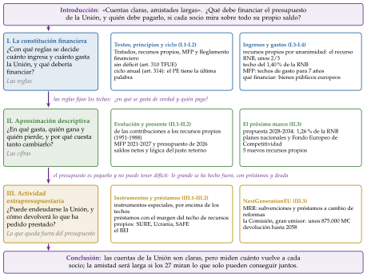
Fuente: elaboración propia.
Siglas. RNB: renta nacional bruta; MFP: marco financiero plurianual; NGEU: NextGenerationEU; MRR: Mecanismo de Recuperación y Resiliencia; RCDE: régimen de comercio de derechos de emisión; MAFC: Mecanismo de Ajuste en Frontera por Carbono; RAL: compromisos pendientes de pago (reste à liquider). La notación de los modelos de los anexos se define en cada uno.
I. Actividad presupuestaria: la constitución financiera
Empezamos preguntándonos por qué la Unión tiene un presupuesto común y seguimos con las reglas que lo rigen, porque en la Unión el dinero se mueve dentro de un marco jurídico muy rígido: quién decide cuánto se ingresa, cuánto se gasta y cómo se controla.
Conclusión anticipada: la Unión no tiene poder tributario ni puede endeudarse para cubrir su presupuesto. Los Estados fijan por unanimidad cuánto puede ingresar (la Decisión de recursos propios) y cuánto puede gastar cada año durante 7 años (el marco financiero plurianual); dentro de esos techos, el Parlamento y el Consejo aprueban cada presupuesto anual, que ejecuta la Comisión y controlan el Tribunal de Cuentas y el Parlamento.
Por qué hay un presupuesto común: la respuesta de la economía viene de la teoría del federalismo fiscal, que reparte las funciones del sector público entre niveles de gobierno [ver tema 4.B.14]. Con las 3 funciones de Musgrave (1959):
la estabilización y la redistribución corresponden sobre todo al nivel central, porque la movilidad de personas y capitales y las externalidades entre territorios las hacen ineficaces en el nivel bajo;
la asignación (ofrecer bienes públicos) se reparte: cada bien al nivel que abarque a todos los que se benefician de él.
Qué puede hacer la Unión: el teorema de la descentralización de Oates (1972) mira el coste de centralizar: imponer a todos lo mismo aunque sus preferencias difieran [ver tema 3.B.36]. Por eso la Unión solo actúa donde los Tratados le atribuyen competencias (art. 5 TUE), y el presupuesto financia acciones en todas sus categorías de competencia (anexo E). Qué debería financiar con ese criterio, los bienes públicos europeos, se cuenta al final del bloque, cuando ya conocemos los techos de gasto (I.4.2).
El orden del bloque: primero, los textos que forman el marco jurídico (I.1); después, quién decide y con qué mayoría en el ciclo anual (I.2); por último, los ingresos (I.3) y los gastos (I.4).
I.1. Los textos de la constitución financiera
Las normas sobre el presupuesto forman lo que se suele llamar la constitución financiera de la Unión. Son 4 textos, más uno de protección del presupuesto (figura 2):
Los Tratados: las disposiciones financieras del TFUE (arts. 310-325) y, para la política exterior y de seguridad común (PESC), el art. 41 del TUE. Fijan los principios básicos, el procedimiento anual (art. 314) y quién controla.
El Reglamento financiero: las normas para elaborar, ejecutar y controlar el presupuesto. Se adopta por el procedimiento legislativo ordinario (art. 322 TFUE). El vigente es el Reglamento (UE, Euratom) 2024/2509, que refundió el de 2018 y se aplica desde el 30 de septiembre de 2024.
La Decisión de recursos propios (art. 311 TFUE): fija qué ingresos tiene la Unión y su techo. La adopta el Consejo por unanimidad, previa consulta al Parlamento, y no entra en vigor hasta que la aprueban todos los Estados según sus normas constitucionales (en España, como un tratado, con autorización de las Cortes). Tiene, en la práctica, rango de Derecho primario. Rige la Decisión 2020/2053.
El Reglamento del marco financiero plurianual (art. 312 TFUE): fija los techos de gasto de cada año del periodo. Lo adopta el Consejo por unanimidad con la aprobación del Parlamento. Rige el Reglamento 2020/2093, revisado por el Reglamento 2024/765. Lo acompaña un Acuerdo interinstitucional entre Parlamento, Consejo y Comisión (16 de diciembre de 2020) sobre disciplina presupuestaria, cooperación y la hoja de ruta de nuevos recursos propios.
La protección del presupuesto: desde 2021, el régimen general de condicionalidad (Reglamento 2020/2092) permite suspender pagos a un Estado si las vulneraciones del Estado de Derecho afectan a la buena gestión financiera de los fondos.
Los 4 textos se renegocian a la vez: cada nuevo marco plurianual viene con su decisión de recursos propios y su acuerdo interinstitucional, como un solo paquete.
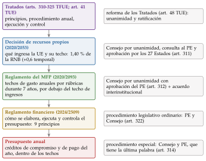
Fuente: elaboración propia a partir de los arts. 310-325 del TFUE, la Decisión 2020/2053, el Reglamento 2020/2093 y el Reglamento financiero.
I.2. Los Tratados y el Reglamento financiero: principios y ciclo presupuestario
I.2.1. Los principios presupuestarios
El Reglamento financiero (arts. 6-38 del de 2018, que el de 2024 mantiene) somete el presupuesto a 9 principios. Los agrupamos por lo que protegen:
Que el presupuesto sea completo y fiable:
unidad y veracidad: todos los ingresos y gastos van en un único documento, y no se puede gastar nada que no esté consignado en una línea presupuestaria;
universalidad: los ingresos forman una masa común que financia todos los gastos. Tiene 2 reglas: no afectación (ningún ingreso se destina a un gasto concreto) y no compensación (ingresos y gastos se consignan por su importe bruto). Su gran excepción son los ingresos afectados externos: el dinero del NextGenerationEU entra así en el presupuesto (III.3);
especialidad: cada crédito tiene un destino concreto (títulos y capítulos por políticas); las transferencias entre líneas tienen reglas.
Que no haya déficit:
equilibrio (art. 310 TFUE): los ingresos previstos cubren los créditos de pago. La Unión no puede endeudarse para financiar el presupuesto. El saldo de la ejecución pasa al año siguiente: un superávit, como ingreso; un déficit, como gasto;
unidad de cuenta: el presupuesto se elabora y ejecuta en euros.
Que el gasto se programe en el tiempo:
anualidad: los créditos se autorizan para un año natural. Como muchos programas duran varios años, se distingue entre créditos de compromiso (las obligaciones jurídicas que se pueden contraer en el año) y créditos de pago (lo que se puede pagar en el año, por compromisos de ese año o de años anteriores). Los créditos disociados tienen las 2 partes; los no disociados (administración, ayudas directas de la PAC), solo una. Lo comprometido y aún no pagado se llama RAL (del francés reste à liquider): eran 501.100 millones de euros a finales de 2025, más de 2 años y medio de presupuesto.
Que se gaste bien y a la vista:
buena gestión financiera y rendimiento: economía, eficiencia y eficacia, con objetivos e indicadores por programa;
transparencia: el presupuesto se publica en el Diario Oficial, y los beneficiarios de los fondos, en un sistema de consulta (FTS).
Una regla mnemotécnica: «la Unión Europea forma una unión aduanera; la Unión Europea firma un tratado que incluye el comercio de bolígrafos»: unidad, equilibrio, unidad de cuenta, anualidad, universalidad, especialidad, transparencia y buena gestión financiera (la veracidad va con la unidad).
Son casi los mismos principios que los de los Presupuestos Generales del Estado [ver tema 4.B.21]. La diferencia está en el equilibrio: un Estado puede tener déficit y la Unión no.
I.2.2. El ciclo presupuestario
El presupuesto anual pasa por 3 fases: elaboración y aprobación, ejecución y control. Desde los Tratados de 1970 y 1975, el Parlamento ganó poder en las 3, hasta ser con el Consejo la autoridad presupuestaria.
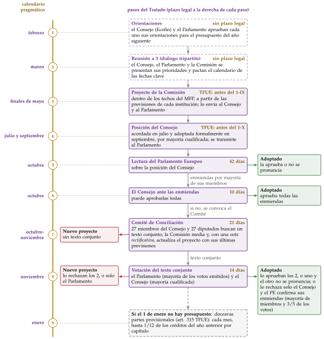
Fuente: elaboración propia a partir de los arts. 314 y 315 del TFUE, de la infografía «Ciclo presupuestario de la UE (calendario pragmático)» de la Secretaría General del Consejo de la Unión Europea y del Consejo de la Unión Europea.
Elaboración y aprobación (art. 314 TFUE)
La elaboración: cada institución hace su estado de previsiones (el BCE no, porque tiene presupuesto propio) y la Comisión, a través de su Dirección General de Presupuestos, prepara el proyecto de presupuesto dentro de los techos del marco plurianual.
El Tratado le da de plazo hasta el 1 de septiembre; en la práctica lo presenta a finales de mayo o en junio, según el calendario pragmático que pactan cada año las 3 instituciones (figura 3): en febrero, el Consejo y el Parlamento fijan sus orientaciones; en marzo se reúnen con la Comisión para presentarse sus prioridades y acordar las fechas; el Consejo fija su posición en julio y la adopta formalmente en septiembre, y la conciliación se cierra en noviembre.
El presupuesto tiene un estado general de ingresos y una sección por institución; la de la Comisión, que es casi todo el gasto, se ordena por títulos (políticas), capítulos (programas), artículos y partidas.
La aprobación es un procedimiento legislativo especial con una sola lectura en cada institución (figura 3):
Paso 1: el Consejo adopta su posición por mayoría cualificada y la transmite al Parlamento antes del 1 de octubre.
Paso 2: el Parlamento tiene 42 días. Si la aprueba o no se pronuncia, el presupuesto queda adoptado. Si aprueba enmiendas, por mayoría de sus miembros, el texto vuelve al Consejo.
Paso 3: si el Consejo no acepta todas las enmiendas en 10 días, se convoca el Comité de Conciliación (los 27 del Consejo y otros tantos diputados), que tiene 21 días para acordar un texto conjunto. La Comisión participa para acercar posiciones.
Paso 4: con acuerdo, el Parlamento y el Consejo tienen 14 días para aprobarlo. Si lo rechaza el Parlamento, o los 2, la Comisión presenta un nuevo proyecto; si solo lo rechaza el Consejo, el Parlamento puede confirmar sus enmiendas por mayoría de sus miembros y 3/5 de los votos emitidos. Es decir, en el presupuesto anual el Parlamento tiene la última palabra.
Paso 5: el presidente del Parlamento declara adoptado el presupuesto, normalmente a finales de noviembre o en diciembre.
Si el 1 de enero no hay presupuesto, se aplica el régimen de las doceavas partes provisionales (art. 315 TFUE): cada mes se puede gastar hasta 1/12 de los créditos del año anterior por capítulo.
Durante el año, los presupuestos rectificativos cambian el presupuesto inicial por el mismo procedimiento (en 2026, por ejemplo, para el Préstamo de Apoyo a Ucrania).
El procedimiento como competencia de las instituciones tiene su sitio aparte [ver tema 3.B.36].
Ejecución (art. 317 TFUE)
La Comisión ejecuta el presupuesto bajo su responsabilidad, en cooperación con los Estados. Hay 3 modos de gestión:
gestión compartida, con los Estados, que seleccionan los proyectos, pagan y controlan: la PAC, la cohesión, la pesca y los fondos de interior. Es en torno al 70 % del gasto;
gestión directa, por los servicios de la Comisión o sus agencias ejecutivas: la investigación (Horizonte Europa), Erasmus+ o el Mecanismo Conectar Europa, en torno al 20 %;
gestión indirecta, por organismos a los que la Comisión confía la ejecución: el BEI, organizaciones internacionales, terceros países o agencias nacionales, en torno al 10 %.
Las demás instituciones ejecutan su propia sección (gastos de personal y funcionamiento).
Control
El control interno lo hace cada institución, con un auditor interno y la regla de que quien autoriza un gasto no es quien lo paga.
El control externo lo hace el Tribunal de Cuentas Europeo (arts. 285-287 TFUE), institución de la Unión desde Maastricht. No sanciona, pero examina la legalidad y regularidad de los ingresos y gastos y la buena gestión financiera:
cada año publica su informe anual sobre el ejercicio anterior, con una declaración de fiabilidad de las cuentas y una estimación del nivel de error en el gasto. En el ejercicio de 2025 dio una opinión desfavorable sobre el gasto, con un error estimado del 3,8 % (5,6 % en el gasto de alto riesgo, sobre todo la cohesión), y una opinión con reservas sobre el MRR, por 16 hitos u objetivos de 420 que no se habían cumplido;
publica además unos 30 informes especiales al año sobre programas concretos.
El control político es del Parlamento: el procedimiento de aprobación de la gestión (descargo, art. 319 TFUE). El Parlamento, a recomendación del Consejo, aprueba o aplaza la gestión de la Comisión del ejercicio \(t-2\) (la de 2024 se aprobó en la primavera de 2026), y la Comisión debe seguir sus observaciones.
La lucha contra el fraude (art. 325 TFUE) es de la Unión y de los Estados:
la Oficina Europea de Lucha contra el Fraude (OLAF, 1999) hace investigaciones administrativas en las instituciones y en los Estados y recomienda recuperar fondos;
la Fiscalía Europea (en funcionamiento desde junio de 2021) investiga y lleva a juicio los delitos contra el presupuesto, como el fraude transfronterizo del IVA, en los 25 Estados que participan. A finales de 2025 tenía 3.602 investigaciones abiertas, con un perjuicio estimado de 67.270 millones de euros; 2/3 del perjuicio eran fraudes del IVA y de aduanas, y 512 casos afectaban al MRR.
La condicionalidad del Estado de Derecho: el Tribunal de Justicia avaló el Reglamento 2020/2092 en febrero de 2022, y en diciembre de 2022 el Consejo suspendió a Hungría 6.300 millones de euros de compromisos de la cohesión (el 55 % de 3 programas). Tras las elecciones húngaras de abril de 2026, la Comisión propuso en septiembre levantar las medidas, y el Consejo lo aprobó en octubre de 2026.
I.3. Los ingresos: la Decisión de recursos propios (2020)
I.3.1. El sistema de recursos propios
La idea: desde la Decisión de 21 de abril de 1970, la Comunidad se financia con recursos propios, ingresos que le corresponden por derecho y que los Estados recaudan y le transfieren, y no con contribuciones que cada Estado decide cada año. Es lo que da autonomía financiera a la Unión. Pero la Unión no tiene poder tributario: crear un recurso propio exige la unanimidad y la ratificación de todos los Estados (art. 311 TFUE).
Los techos de la Decisión 2020/2053:
los recursos propios no pueden pasar del 1,40 % de la RNB de la Unión en pagos (1,46 % en compromisos). El techo subió desde el 1,20 % de la Decisión de 2014 por la salida del Reino Unido y la integración del Fondo Europeo de Desarrollo en el presupuesto;
hay además un aumento temporal de 0,6 puntos de RNB, solo para cubrir la deuda del NextGenerationEU, hasta que se devuelva (como tarde, el 31 de diciembre de 2058);
la diferencia entre el techo y lo que se gasta es el margen de maniobra (headroom): es la garantía de la deuda de la Unión, porque la Comisión puede pedir a los Estados recursos hasta ese techo para pagar a sus acreedores (III.2).
Los recursos, de más antiguo a más nuevo (gráfico 1):
Recursos propios tradicionales (desde 1970): los derechos de aduana del arancel aduanero común y, hasta 2017, las cotizaciones del azúcar. Los recaudan las aduanas nacionales, que se quedan el 25 % como gastos de recaudación [ver tema 3.B.41]. En 2025 fueron 23.000 millones de euros, el 15 % de los recursos propios.
Recurso IVA (desde 1979, cuando se armonizó la base): un tipo de referencia del 0,30 % sobre una base de IVA armonizada (la recaudación dividida por el tipo medio ponderado), que no puede pasar del 50 % de la RNB de cada Estado, para no castigar a los países de consumo alto y renta baja. Fueron 23.900 millones, el 15 %.
Recurso RNB (desde 1988): un tipo uniforme sobre la RNB de cada Estado, que se fija cada año para cerrar el presupuesto. Nació como recurso de cierre y hoy es el principal, con 101.700 millones en 2025, el 65 % de los recursos propios (y más de 2/3 en el presupuesto de 2026). Es el más justo con la capacidad de pago, porque es proporcional a la renta, pero el menos «propio»: es una contribución nacional con otro nombre.
Recurso plástico (desde 2021): 0,80 euros por kilo de residuos de envases de plástico no reciclados, con una rebaja a tanto alzado para los Estados con RNB per cápita inferior a la media. Fueron 6.900 millones, el 4 %. Tiene un doble dividendo: recauda y anima a reciclar.
Las correcciones: el sistema también ha servido para rebajar la factura de algunos contribuyentes netos.
El cheque británico (Consejo Europeo de Fontainebleau, 1984) devolvía al Reino Unido 2/3 de su saldo negativo, porque recibía poco de la PAC y pagaba mucho por el IVA2. Lo pagaban los demás, con un descuento para Alemania, los Países Bajos, Austria y Suecia (la «rebaja sobre la rebaja»). Desapareció con el Brexit.
En 2021-2027, Dinamarca, Alemania, los Países Bajos, Austria y Suecia tienen reducciones a tanto alzado de su contribución RNB: 377, 3.671, 1.921, 565 y 1.069 millones de euros al año, a precios de 2020, que pagan todos los Estados según su RNB (España incluida).
Otros ingresos: impuestos sobre los sueldos del personal, contribuciones de terceros países a los programas, multas de competencia e intereses de demora, y el superávit del año anterior. Suelen ser entre el 2 % y el 8 % del total.
Y no puede tomar prestado: el principio de equilibrio impide financiar el presupuesto con deuda. El NextGenerationEU es la excepción autorizada por la propia Decisión (art. 5): hasta 750.000 millones de euros de 2018, que se ingresan como ingresos afectados externos, fuera de los techos del marco, y se devuelven antes de 2058 (III.3).
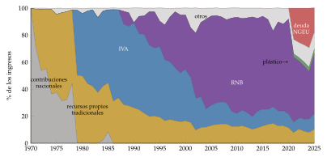
Fuente: elaboración propia a partir de la Comisión Europea. Recursos tradicionales netos de los gastos de recaudación; «deuda NGEU»: préstamos tomados para el NextGenerationEU que se ingresan como ingresos afectados.
I.3.2. Los nuevos recursos propios
Por qué: el Acuerdo interinstitucional de 2020 se comprometió a introducir nuevos recursos propios que paguen, al menos, la devolución del NextGenerationEU, para no recortar programas ni subir las aportaciones RNB. Además, recursos ligados a políticas comunes (el clima, el mercado único) son más «europeos» y quitan protagonismo a los saldos netos (II.2.5).
Las propuestas, en 3 tandas:
Diciembre de 2021: el 25 % de los ingresos del régimen de comercio de derechos de emisión (RCDE), el 75 % del Mecanismo de Ajuste en Frontera por Carbono (MAFC) y el 15 % de los beneficios residuales de las grandes multinacionales que el Pilar 1 de la OCDE reasignaría a los países de mercado.
Junio de 2023: subió el RCDE al 30 % y, como el Pilar 1 se atascó, propuso un recurso estadístico temporal del 0,5 % del excedente bruto de explotación de las sociedades de cada Estado.
Julio de 2025, con el marco 2028-2034: 5 recursos, con unos 58.500 millones al año: el RCDE y el MAFC, más residuos electrónicos, tabaco y una cuota de las grandes empresas (II.3).
El MAFC, el más avanzado de los candidatos, porque ya está en vigor (figura 4) [ver tema 3.B.31]. Su lógica es sencilla, y se entiende en 3 pasos:
el problema: el RCDE obliga a los productores europeos de los sectores intensivos en carbono a comprar derechos por sus emisiones, pero no a sus competidores de fuera. La producción puede irse fuera sin que el mundo emita menos (la fuga de carbono), y para evitarlo la Unión regalaba derechos a esos sectores, lo que debilita el incentivo a reducir;
la solución: el importador de cemento, hierro y acero, aluminio, fertilizantes, electricidad o hidrógeno compra certificados por las emisiones incorporadas en lo que importa, al precio de las subastas del RCDE (82,32 € por tonelada de CO2 en el tercer trimestre de 2026), y descuenta el precio del carbono que ya pagó en origen y la parte que en la Unión aún se cubre con derechos gratuitos (el 97,5 % en 2026, nada en 2034);
el calendario: tras un periodo transitorio solo de información (octubre de 2023 a diciembre de 2025), el régimen definitivo empezó el 1 de enero de 2026; los certificados se venden desde febrero de 2027, y en 2027 se declara y se paga lo importado en 2026. La simplificación de 2025 dejó fuera a los importadores de menos de 50 toneladas al año, 9 de cada 10, pero solo el 1 % de las emisiones.
Para el presupuesto es un recurso pequeño (unos 1.400 millones al año si se aprueba el 75 % propuesto), pero muy «europeo»: nace de una política común y recae sobre las importaciones, no sobre las aportaciones de los Estados.
Su estado en noviembre de 2026: ninguno se ha aprobado. Las propuestas de 2021 y 2023 siguen sin la unanimidad del Consejo, y las de 2025 están entre corchetes en la negociación del próximo marco; el Parlamento las apoya y pide al menos 60.000 millones al año. El NextGenerationEU se empezará a devolver, por tanto, con las aportaciones de siempre.
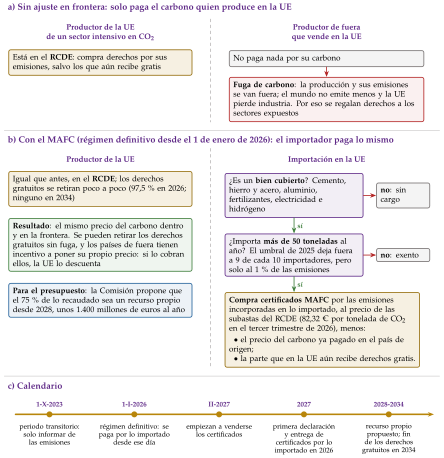
Fuente: elaboración propia a partir de los Reglamentos (UE) 2023/956 y 2025/2083 y de la Comisión Europea; la idea del árbol de decisión es de Hufbauer (2021).
I.4. Los gastos: el marco financiero plurianual
I.4.1. Qué es y cómo se aprueba
Qué es: el marco financiero plurianual (MFP) es un reglamento que fija, para un periodo de al menos 5 años (en la práctica, 7), los techos anuales de créditos de compromiso por rúbricas (grandes áreas de gasto) y un techo anual de créditos de pago (art. 312 TFUE). No es un presupuesto plurianual: es un límite que cada presupuesto anual debe respetar.
Para qué sirve:
hace el gasto previsible: los programas de 7 años (PAC, cohesión, investigación) saben con qué cuentan;
impone disciplina: los techos están por debajo del techo de recursos propios, y el margen entre ambos garantiza que siempre se podrá pagar;
concentra el conflicto en una negociación cada 7 años y pacifica los presupuestos anuales, que antes de 1988 enfrentaban cada año al Consejo y al Parlamento.
Cómo se aprueba:
la Comisión propone el reglamento y, con él, la nueva decisión de recursos propios y los reglamentos de cada programa;
el Consejo Europeo da las orientaciones políticas (las cifras se cierran en una cumbre, por unanimidad);
el Consejo lo adopta por unanimidad tras la aprobación del Parlamento, por mayoría de sus miembros. El Parlamento no puede enmendarlo, pero puede vetarlo, y lo usa para negociar: en 2020 consiguió 16.000 millones de euros más para sus programas y el calendario de nuevos recursos propios;
el Consejo Europeo podría permitir, por unanimidad, que se adoptara por mayoría cualificada (pasarela del art. 312.2), pero nunca lo ha hecho;
si no se adopta a tiempo, se prorrogan los techos del último año del marco anterior (art. 312.4).
Su flexibilidad: los márgenes sin asignar bajo cada techo, el margen único (que lleva a otros años lo que no se usa) y los instrumentos especiales, que pueden superar los techos (III.1).
¿Qué debería financiar este marco? La economía da una respuesta clara, aunque, como veremos en el bloque II, la realidad se parece poco a ella.
I.4.2. ¿Qué debe financiar la Unión? Los bienes públicos europeos
Antes de ver en qué gasta la Unión conviene preguntarse en qué debería gastar. Según el federalismo fiscal, cada bien público corresponde al nivel de gobierno que abarque a todos los que se benefician de él [ver tema 4.B.14].
Si el teorema de la descentralización de Oates mira el coste de centralizar, el argumento de los bienes públicos europeos mira el beneficio. Son los bienes cuyos beneficios cruzan las fronteras: la investigación básica, la vigilancia de las fronteras exteriores, la defensa, las redes de transporte y energía o la lucha contra el cambio climático.
Por qué la Unión debe financiarlos: si cada Estado decide por su cuenta cuánto aportar, solo cuenta el beneficio que el bien le da a él, no el que da a los demás, y espera que sean otros quienes paguen (el problema del polizón, free rider) [ver tema 3.A.23]. El resultado es menos bien público del eficiente. La regla de Bowen (1943) y Samuelson (1954)3 dice que lo eficiente es ofrecer el bien hasta que la suma de lo que valoran todos los Estados iguale su coste, y el presupuesto común permite hacerlo. Cuantos más Estados se reparten el beneficio, mayor es la brecha entre lo que ofrecería cada uno y lo eficiente. Esa diferencia es lo que la Comisión llama valor añadido europeo. El desarrollo formal, con un ejemplo numérico y su gráfico, está en el anexo A.
Lo que se deduce para el presupuesto se resume en 4 criterios:
concentrarse en los bienes con grandes efectos entre Estados: investigación e innovación, redes transeuropeas, fronteras exteriores, defensa, acción exterior y clima. Ahí cada euro gastado en común rinde más que en los presupuestos nacionales, y más aún si hay economías de escala (no duplicar 27 sistemas de armas);
no hacer lo que los Estados hacen bien solos: si las preferencias difieren y los efectos se quedan dentro, mejor el nivel nacional (Oates);
la redistribución entre Estados tiene otra justificación, la cohesión de un mercado único y de una moneda común [ver tema 3.B.40];
la estabilización apenas está: con un presupuesto del 1 % de la RNB y sin déficit, la Unión no puede amortiguar los ciclos. El NextGenerationEU fue la primera excepción (III.3).
Lo que dice la evidencia: la realidad se parece poco a ese criterio.
Alesina, Angeloni y Schuknecht (2005) encontraron que el gasto y la regulación de la Unión crecieron también donde la teoría no lo justifica (la agricultura, buena parte del gasto regional) y poco donde sí (defensa, política exterior);
el presupuesto lo confirma: la PAC y la cohesión todavía se llevan casi 2/3 del marco 2021-2027 (II.2.1), y la investigación, en torno al 8 %;
el informe Draghi (2024) calcula que la Unión necesita entre 750.000 y 800.000 millones de euros más de inversión al año (4,4-4,7 % de su PIB) para recuperar la competitividad, en buena parte en bienes públicos europeos: innovación, energía, descarbonización y defensa. Es el origen del Fondo Europeo de Competitividad propuesto para 2028-2034 (II.3).
El criterio supone que la Unión decide como un planificador benevolente. En la realidad, el presupuesto lo deciden 27 gobiernos por unanimidad, y cada uno mira cuánto recibe a cambio de lo que paga. Para entender lo que de verdad financia hay que ver cómo ha evolucionado y cómo se negocia.
Recapitulación: el presupuesto de la Unión vive dentro de 4 textos aprobados por unanimidad; se financia sobre todo con aportaciones proporcionales a la RNB y no puede tener déficit; la teoría dice que debería concentrarse en bienes públicos europeos. Veamos qué ha hecho en la práctica.
II. Actividad presupuestaria: aproximación descriptiva
Una vez vistas las reglas, pasamos a las cifras: cómo ha cambiado el presupuesto, qué financia hoy y qué se negocia para después de 2027.
Conclusión anticipada: el presupuesto ha sido siempre pequeño (en torno al 1 % de la RNB) y ha cambiado mucho por dentro: de financiarse con aranceles a hacerlo con aportaciones según la renta, y de ser casi solo agrícola a repartirse entre la PAC, la cohesión y, cada vez más, la competitividad y la acción exterior. Cada cambio se pactó por unanimidad, con compensaciones a quien perdía.
II.1. Evolución histórica de la actividad presupuestaria
La historia de las finanzas de la Unión cabe en 3 movimientos, que conviene tener presentes antes de entrar en el detalle:
de contribuciones a recursos propios (1970-1988): los Estados dejan de pagar cuotas fijas y la Comunidad pasa a tener ingresos que le corresponden por derecho;
de presupuestos anuales conflictivos a marcos plurianuales (1988): tras una década de crisis presupuestarias, el gasto se programa a 7 años con techos pactados por unanimidad;
de la PAC a la cohesión y la competitividad (desde 1988): la PAC pasa de casi 3/4 del gasto a algo más de 1/3 (sin el NextGenerationEU); la cohesión crece con las ampliaciones al Sur y al Este, y ahora crecen la investigación, la acción exterior, la defensa y la migración.
Los recorremos por etapas, distinguiendo en cada una los ingresos, los gastos y el reparto del poder presupuestario. La tabla 1 lo resume, y el gráfico 2 muestra el gasto desde 1958, en euros y en porcentaje de la RNB.
II.1.1. Los orígenes: de las contribuciones a los recursos propios (1951-1987)
Hasta 1970, un presupuesto pequeño financiado por los Estados:
ingresos: la CECA (1951) tenía un recurso propio, una exacción sobre la producción de carbón y acero; la CEE y Euratom (1957) se financiaban con contribuciones nacionales según claves fijadas en los Tratados;
gastos: muy reducidos, porque había pocas políticas comunes. En 1965 el gasto era el 0,1 % de la RNB y casi todo administración; el Fondo Social Europeo (1958) y el FEOGA (1962) apenas empezaban;
instituciones: 3 presupuestos (CECA, CEE y Euratom). El Tratado de fusión (1965) unificó los gastos administrativos, y el presupuesto de investigación de Euratom pasó al general en 1968; el operativo de la CECA siguió aparte hasta que expiró su Tratado, en 2002. La autoridad presupuestaria era solo el Consejo.
La PAC hace crecer el gasto: con los precios agrarios comunes (1967-1968), el FEOGA-Garantía pasó a pagar las intervenciones y las restituciones a la exportación. En 1970 el gasto llegó al 0,7 % de la RNB, y más de 9 de cada 10 euros eran agrarios (gráfico 2).
La década de 1970: recursos propios y un Parlamento con poder:
ingresos: la Decisión de 21 de abril de 1970 sustituyó las contribuciones por recursos propios: las exacciones agrícolas y los derechos de aduana del arancel común (que se transfirieron por completo desde 1975) y una parte del IVA, hasta el 1 % de una base armonizada. El recurso IVA solo se pudo cobrar desde 1979, cuando la Sexta Directiva (1977) armonizó la base;
gastos: la PAC llegó a ser el 70-75 % del total, y nació la política regional con el FEDER (1975), tras la entrada del Reino Unido, Irlanda y Dinamarca (1973);
instituciones: los Tratados presupuestarios de Luxemburgo (1970) y de Bruselas (1975) dieron al Parlamento la última palabra sobre los «gastos no obligatorios» (todo lo que no era la PAC), el poder de rechazar el presupuesto en su conjunto y la aprobación de la gestión de la Comisión; el de 1975 creó el Tribunal de Cuentas Europeo, que empezó a funcionar en 1977.
1980-1987: la década de las crisis presupuestarias. Los recursos propios se quedaron cortos para un gasto agrario disparado (los excedentes de mantequilla, leche y cereales), y la financiación se convirtió en un conflicto permanente:
ingresos: los aranceles se erosionaban con las rebajas del GATT y el IVA tocaba techo. El Consejo Europeo de Fontainebleau (1984) subió el tope del IVA al 1,4 % desde 1986 y creó el cheque británico, que devolvía al Reino Unido 2/3 de su saldo negativo;
gastos: la ampliación al Sur (Grecia en 1981; España y Portugal en 1986) trajo países menos ricos y receptores netos, y aumentó el FEDER, el FSE y la nueva política pesquera;
instituciones: el Parlamento, elegido por sufragio directo desde 1979, rechazó los presupuestos de 1980 y de 1985, y la Comunidad tuvo que funcionar con doceavas partes provisionales. Hubo que pedir anticipos a los Estados para cerrar los ejercicios.
II.1.2. La reforma de 1988 y los primeros marcos (1988-2006)
El Paquete Delors I (1988-1992). El Acta Única (1986) prometía el mercado interior para 1992 y más cohesión, y sin una reforma de las finanzas no había con qué pagarlo. La Comisión de Jacques Delors propuso en 1987 un paquete que el Consejo Europeo aprobó en febrero de 1988:
ingresos: el recurso PNB (luego RNB), un cuarto recurso de cierre que hace que cada Estado pague según su renta y reduce la regresividad del IVA, cuya base se limitó al 55 % del PNB; y un techo de recursos propios, del 1,15 % del PNB en 1988 al 1,20 % en 1992;
gastos: las primeras perspectivas financieras (1988-1992), con techos por rúbricas, la duplicación de los fondos estructurales y una directriz agraria: el gasto de la PAC no podía crecer más del 74 % de lo que creciera el PNB;
instituciones: un acuerdo interinstitucional por el que el Parlamento, el Consejo y la Comisión se comprometen a respetar los techos. Desde entonces el conflicto se concentra en la negociación de cada marco, y los presupuestos anuales se aprueban dentro de sus techos.
El Paquete Delors II (1993-1999), acordado en el Consejo Europeo de Edimburgo (1992) para aplicar Maastricht:
ingresos: el techo subió al 1,27 % del PNB en 1999, y el IVA se rebajó del 1,4 % al 1 %, con la base limitada al 50 % del PNB, para corregir su regresividad. En 1999 el recurso PNB ya era el primer ingreso;
gastos: el Fondo de Cohesión (1993), para los Estados con una renta inferior al 90 % de la media (España, Portugal, Grecia e Irlanda), que debían cumplir los criterios de convergencia del euro [ver tema 3.B.40]. España se convirtió en el primer receptor neto en euros.
La Agenda 2000 (2000-2006), acordada en el Consejo Europeo de Berlín (1999) para preparar la ampliación al Este:
ingresos: el techo se congeló en el 1,27 % del PNB; el tipo del IVA bajó al 0,75 % y, desde 2004, al 0,50 %; los Estados se quedaron el 25 % de los aranceles como gastos de recaudación (antes, el 10 %), y Alemania, los Países Bajos, Austria y Suecia pasaron a pagar solo 1/4 de lo que les tocaba del cheque británico;
gastos: más disciplina, con un gasto por debajo del 1,1 % de la RNB; la reforma de la PAC (rebajas de precios compensadas con ayudas directas, que la reforma de 2003 desacopló de la producción) [ver tema 3.B.38]; y las ayudas de preadhesión para los candidatos del Este.
II.1.3. La Unión ampliada y en crisis (2007-2027)
El marco 2007-2013, acordado en diciembre de 2005, el primero de una Unión de 27, más pobre y más agraria tras la ampliación de 2004 y 2007:
ingresos: el IVA bajó al 0,30 %, con tipos aún menores para Alemania, los Países Bajos, Austria y Suecia, y los Países Bajos y Suecia recibieron reducciones de su aportación RNB;
gastos: los contribuyentes netos pedían no pasar del 1 % de la RNB y el techo quedó en el 1,05 % en compromisos. La cohesión subió al 35 % del marco y superó por primera vez a las ayudas directas y los mercados agrarios; aparecieron rúbricas para la competitividad (la Estrategia de Lisboa) y para la libertad, la seguridad y la justicia.
El marco 2014-2020, negociado en plena crisis del euro (Consejo Europeo de febrero de 2013):
tamaño: 960.000 millones de euros de 2011, el 1 % de la RNB, el primer marco que bajaba en términos reales respecto al anterior: ganaron los contribuyentes netos;
ingresos: el IVA de Alemania, los Países Bajos y Suecia bajó al 0,15 %, y Dinamarca, los Países Bajos, Suecia y Austria recibieron reducciones a tanto alzado de su aportación RNB;
gastos: la PAC bajó un 11 % y la cohesión un 8 %, con nuevas condiciones (ex ante y macroeconómicas) y una reserva de rendimiento; los programas de la Estrategia Europa 2020 (investigación, redes transeuropeas, digital) subieron un 37 %;
instituciones: con el Tratado de Lisboa (2009), el marco pasó a ser un reglamento (art. 312 TFUE) y desapareció la distinción entre gastos obligatorios y no obligatorios: el Parlamento decide ya sobre todo el presupuesto anual en igualdad con el Consejo.
El marco 2021-2027, negociado con el Brexit y la pandemia, rompe con el pasado por 3 novedades: el fin del cheque británico, el recurso plástico y, sobre todo, la deuda común del NextGenerationEU. Lo vemos en detalle en el apartado II.2.
| Etapa | Ingresos | Gastos | Instituciones |
|---|---|---|---|
| 1951-1970 | contribuciones nacionales (la CECA tenía un impuesto propio sobre el carbón y el acero) | reducidos; arranca la PAC (FEOGA, 1962) | presupuestos de CECA, CEE y Euratom; un solo presupuesto desde el Tratado de fusión (1965); decide el Consejo |
| 1970-1987 | recursos propios (1970): aranceles y exacciones agrícolas; IVA desde 1979 (1 %, 1,4 % desde 1986); erosión de los aranceles por las rondas del GATT | la PAC llega al 70-75 % del gasto; FEDER (1975); ampliación al Sur (1981, 1986) | Tratados de 1970 y 1975: el PE, autoridad presupuestaria; Tribunal de Cuentas (1977); cheque británico (1984) |
| Delors I (1988-1992) | recurso RNB, de cierre; techo de recursos propios del 1,15-1,20 % del PNB | primeras perspectivas financieras; la PAC no puede crecer más del 74 % de lo que crece el PNB; se duplican los fondos estructurales | acuerdo interinstitucional |
| Delors II (1993-1999) | techo al 1,27 % del PNB; IVA rebajado (1 %) y base limitada al 50 % del PNB, por su regresividad | Fondo de Cohesión (1993), para preparar el euro | Maastricht; el RNB pasa a ser el primer recurso (1999) |
| Agenda 2000 (2000-2006) | techo congelado; IVA al 0,50 %; descuentos en la financiación del cheque | reforma de la PAC; ayudas de preadhesión para el Este | preparación de la ampliación de 2004 |
| 2007-2013 | IVA al 0,30 %, con tipos reducidos para algunos contribuyentes netos | techo en torno al 1 % de la RNB; la cohesión supera a las ayudas directas y los mercados de la PAC; más investigación | ampliación al Este: la Unión es más pobre y más agraria |
| 2014-2020 | correcciones del IVA y de la RNB para 4 contribuyentes netos | primer marco que baja en términos reales (1 % de la RNB); condicionalidad en la cohesión | Lisboa: el MFP pasa a ser un reglamento (art. 312) |
| 2021-2027 | recurso plástico; techo del 1,40 % (+0,6 temporal); Brexit: fin del cheque | NextGenerationEU; más migración, defensa y vecindad | condicionalidad del Estado de Derecho; deuda común |
Fuente: elaboración propia a partir de Comisión Europea (2014) y del Parlamento Europeo.
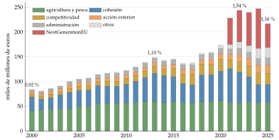
Fuente: elaboración propia a partir de la Comisión Europea: el Informe financiero de 2008 para 1958-1999 y los datos de gasto e ingresos desde 2000. Presupuesto general, sin el FED ni la CECA; unidades de cuenta y ecus equiparados al euro; el % de la RNB de 1970-1999 es cálculo propio con la RNB de la misma fuente. Hasta 1999, competitividad es solo investigación; agricultura incluye el desarrollo rural desde 2007; el NextGenerationEU agrupa el MRR y los refuerzos de otros programas.
Lo que no ha cambiado desde 1988: el tamaño. Cada marco se ha quedado entre el 1 % y el 1,25 % de la RNB en compromisos, y el gasto ejecutado, en torno al 1 % (con un máximo del 1,13 % en 1993 y algo menos desde 2000): los contribuyentes netos han frenado siempre cualquier aumento. El gráfico 2 lo muestra: los euros crecen sin parar, pero la línea de la RNB está casi plana desde finales de los 80.
Lo que sí ha cambiado es la composición, y desde 2021 la escala: con el NextGenerationEU, el gasto pasó del 1,0 % al 1,5 % de la RNB en 2021-2022; en 2025 fue el 1,16 %, y sin el NextGenerationEU, el 0,90 %.
II.2. El presupuesto actual: el MFP 2021-2027 y el presupuesto de 2026
II.2.1. El MFP 2021-2027 y NextGenerationEU
Una negociación en 2 tiempos:
Antes de la pandemia (2018-2019): la Comisión propuso 1,135 billones de euros (1,11 % de la RNB), con menos PAC y cohesión y más investigación, migración y defensa; el Parlamento pedía 1,324 billones, y los contribuyentes netos («frugales»: Países Bajos, Austria, Suecia y Dinamarca), no pasar del 1 %. El Brexit quitaba al segundo contribuyente neto.
Con la pandemia: en mayo de 2020 la Comisión añadió un instrumento de recuperación financiado con deuda. El Consejo Europeo de 17-21 de julio de 2020 pactó 1,0743 billones para el marco y 750.000 millones para el NextGenerationEU (a precios de 2018), con más subvenciones de las que querían los frugales (390.000 millones) a cambio de mayores correcciones. El Parlamento logró 16.000 millones más para sus programas, la hoja de ruta de nuevos recursos propios y la condicionalidad del Estado de Derecho. Hungría y Polonia vetaron hasta diciembre, y el Reglamento se adoptó el 17 de diciembre de 2020.
Las cifras: 1.074.300 millones de euros de 2018 en compromisos (1.210.900 millones a precios corrientes, 1.225.900 tras la revisión de 2024) más 750.000 millones del NextGenerationEU (806.900 corrientes): en total, 1,8 billones de 2018, unos 2 billones de euros corrientes. El marco equivale al 1,02 % de la RNB; con el NextGenerationEU, a cerca del 1,7 %.
Las 7 rúbricas (gráfico 3; regla mnemotécnica: «Mi colega Renato me aseguró que su vecino era administrador»):
Mercado único, innovación y economía digital (152.000 millones corrientes tras la revisión, 12 %): Horizonte Europa, el Mecanismo Conectar Europa, Europa Digital, el programa espacial (Galileo, Copernicus), InvestEU.
Cohesión, resiliencia y valores (432.200 millones, 35 %): FEDER, Fondo de Cohesión y FSE+ [ver tema 3.B.40]; Erasmus+, EU4Health, rescEU; y, por fuera del marco, el grueso del NextGenerationEU (el MRR).
Recursos naturales y medio ambiente (400.300 millones, 33 %): la PAC, con el FEAGA (pagos directos y mercados) y el FEADER (desarrollo rural) [ver tema 3.B.38]; el FEMPA (pesca), LIFE y el Fondo de Transición Justa.
Migración y gestión de fronteras (28.900 millones, 2 %): el Fondo de Asilo, Migración e Integración y la gestión integrada de fronteras.
Seguridad y defensa (16.400 millones, 1 %): el Fondo Europeo de Defensa, la movilidad militar y la seguridad interior.
Vecindad y mundo (113.700 millones, 9 %): el Instrumento de Vecindad, Desarrollo y Cooperación Internacional (Europa Global), que integra el antiguo FED, y la ayuda de preadhesión [ver tema 3.B.42].
Administración pública europea (82.500 millones, 7 %).
Sus prioridades transversales: al menos el 30 % del gasto del marco y del NextGenerationEU para el clima y el 7,5 % en 2024 (el 10 % en 2026-2027) para la biodiversidad.
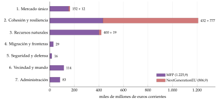
Fuente: elaboración propia a partir de la Comisión Europea. Techos de compromiso tras la revisión de 2024, según el ajuste técnico del marco para 2027 (COM(2026) 299); el NextGenerationEU incluye los préstamos del MRR.
II.2.2. La revisión intermedia de 2024
En 2023 el marco se había quedado corto: la guerra de Ucrania, la migración, la inflación y la subida de los tipos de interés, que encareció la deuda del NextGenerationEU.
El Reglamento 2024/765 (29 de febrero de 2024), tras el acuerdo del Consejo Europeo del 1 de febrero, añadió 64.600 millones de euros:
el Mecanismo para Ucrania, 50.000 millones para 2024-2027: 17.000 de subvenciones por la nueva Reserva para Ucrania, por encima de los techos, y 33.000 de préstamos garantizados por el margen del presupuesto;
2.000 millones para migración y fronteras (rúbrica 4) y 7.600 para vecindad (rúbrica 6: refugiados sirios, Balcanes Occidentales);
la Plataforma de Tecnologías Estratégicas para Europa (STEP): 1.500 millones más para el Fondo Europeo de Defensa y la posibilidad de reorientar fondos de la cohesión y del MRR hacia tecnologías digitales, limpias y biotecnológicas;
más Instrumento de Flexibilidad (2.000 millones) y Reserva para Solidaridad y Ayudas de Emergencia (1.500);
el instrumento EURI, que cubre por encima de los techos el sobrecoste de intereses del NextGenerationEU, con una «cascada»: primero los márgenes del presupuesto, luego el Instrumento de Flexibilidad y, al final, el EURI. En 2026 el sobrecoste fue de 4.225 millones, pagado a medias.
Solo 21.000 millones fueron dinero nuevo de los Estados; el resto, préstamos y redistribuciones de otros programas.
II.2.3. El presupuesto de 2026
Su aprobación: el Comité de Conciliación llegó a un acuerdo el 15 de noviembre de 2025; el Consejo lo aprobó el 24 y el Parlamento el 26 de noviembre.
Su tamaño: 192.768 millones de euros en compromisos y 190.092 en pagos, en torno al 1 % de la RNB de la Unión.
Sus ingresos: el recurso RNB, 133.600 millones (el 70 %, con un tipo en torno al 0,7 % de la RNB de cada Estado); el IVA, 24.800 (13 %); los recursos tradicionales, 21.400 (11 %); el plástico, 6.800 (4 %), y otros ingresos, 3.500 (2 %).
Sus gastos (compromisos): la cohesión (rúbrica 2a, 29 %) y los recursos naturales (rúbrica 3, 29 %) se llevan casi 6 de cada 10 euros; el mercado único y la innovación, el 12 %; vecindad y mundo, el 8 %; resiliencia y valores (incluidos los intereses del NextGenerationEU), otro 8 %; la administración, el 7 %; migración, seguridad y defensa, el 4 %, y el Mecanismo para Ucrania, el 2 %.
La ejecución de 2025, según el Tribunal de Cuentas: 155.200 millones de pagos con cargo al presupuesto (el 96 % de lo previsto) y 216.400 millones contando los ingresos afectados, sobre todo el MRR. Sin las subvenciones del MRR, el gasto fue el 1,0 % de la RNB. Los compromisos pendientes (RAL) eran 501.100 millones.
El de 2027, el último del marco, está en conciliación: el 10 de noviembre de 2026 el Comité llegó a un acuerdo provisional de 199.708 millones en compromisos y 211.520 en pagos (0,99 % y 1,05 % de la RNB), con los pagos del MRR que llegan al final. Falta que lo voten el Consejo y el Parlamento a finales de noviembre.
II.2.4. Contribuyentes y receptores netos
El saldo neto de cada Estado es lo que recibe del presupuesto menos lo que aporta (con la metodología del anexo B). En 2025, sin contar el NextGenerationEU (gráfico 4):
10 contribuyentes netos: el mayor en euros es Alemania (14.855 millones, el 0,32 % de su RNB), seguida de Francia, Italia y los Países Bajos; en porcentaje de la RNB, Alemania, los Países Bajos y Suecia;
17 receptores netos: el mayor en euros es Polonia (6.674 millones) y, en porcentaje de la RNB, Letonia (2,7 %), Lituania, Rumanía y Grecia.
La asimetría: lo que pagan los contribuyentes netos no llega al 0,35 % de su RNB; lo que reciben los países del Este y del Sur llega al 1-3 % de la suya. Para unos es una partida menor; para otros, una fuente de inversión de primer orden [ver tema 3.B.40].
España fue receptora neta desde su adhesión hasta 2013 (más del 1 % del PIB a mediados de los 90) y desde entonces oscila en torno al equilibrio. En 2025 fue contribuyente neta en el presupuesto ordinario (\(-0{,}06\) % de la RNB), pero, con el NextGenerationEU, receptora neta (+0,38 %; +1,21 % en 2024) [ver tema 4.A.30].
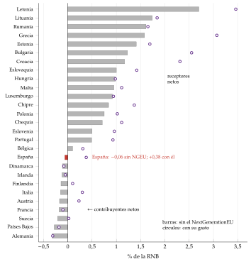
Fuente: elaboración propia con los datos de gasto e ingresos por Estado de la Comisión Europea, con su metodología tradicional: gasto operativo asignado menos contribución nacional ajustada (sin recursos propios tradicionales ni administración).
¿Por qué el saldo neto pesa tanto en la negociación, si es tan pequeño? Es lo que explica la lógica del justo retorno.
II.2.5. La lógica del justo retorno: el presupuesto como negociación
Si la teoría pide bienes públicos europeos, ¿por qué el presupuesto sigue dominado por la PAC y la cohesión? Porque cada marco se negocia por unanimidad y cada gobierno mide el resultado por su saldo neto: lo que recibe menos lo que paga. Es la lógica del justo retorno (juste retour): cada Estado quiere recuperar en gasto lo que aporta. El grupo de alto nivel sobre recursos propios presidido por Mario Monti la señaló en 2016 como el principal defecto del sistema.
Por qué sesga el gasto: el razonamiento, que el anexo C formaliza con un modelo sencillo de negociación, tiene 3 pasos.
El gasto que se asigna a un Estado concreto (las ayudas de la PAC, los fondos de cohesión) se ve en sus cuentas y es un juego de suma cero entre Estados: lo que uno recibe de más lo pagan los demás.
El gasto en bienes públicos europeos (investigación, fronteras, defensa) beneficia a todos, pero sus beneficios son difusos: no salen en las estadísticas de saldos, llegan tarde y nadie se los atribuye al gobierno que los negoció. En las cuentas, cada Estado solo ve lo que le cuesta.
Resultado: si los gobiernos dan poco peso a esos beneficios difusos, cada uno percibe el bien público como una pérdida, y nadie lo defiende con fuerza en la mesa. El gasto asignable, en cambio, lo defiende quien lo recibe, y los contribuyentes netos solo aceptan el paquete si se les compensa.
Sus consecuencias se ven en cada marco:
composición sesgada: se gasta demasiado en lo asignable y poco en bienes públicos europeos, aunque estos rindan más;
correcciones: cada marco se cierra con rebajas para los contribuyentes netos, desde el cheque británico de 1984 hasta las correcciones a tanto alzado de 2021-2027;
sobres y preasignaciones: dotaciones mínimas por Estado y «regalos» de última hora en las cumbres para regiones concretas; el gasto se diseña para que «vuelva»;
inercia: como la alternativa a no acordar es prorrogar el último año del marco anterior (art. 312.4 TFUE), quien gana con el reparto vigente puede vetar cambios; por eso la PAC y la cohesión bajan tan despacio.
La evidencia lo respalda: Kauppi y Widgrén (2004) encontraron que, en el último cuarto del siglo XX, el reparto del gasto entre Estados se explica mejor por su poder de voto en el Consejo (índice de Banzhaf) que por sus necesidades [ver tema 3.B.36]; las correcciones se han extendido de un país a 5; y las negociaciones de 2013 y de 2020 se cerraron con dotaciones especiales, y en 2020 los «frugales» subieron sus correcciones a cambio de aceptar las subvenciones del NextGenerationEU.
Valoración: los saldos netos son una mala medida del beneficio de pertenecer a la Unión. No recogen los beneficios del mercado único, ni que buena parte del gasto en un Estado acaba en empresas de otros (los contratos de la cohesión), ni los bienes públicos. Las salidas son 3, y las 3 están en la propuesta para 2028-2034: más peso de los bienes públicos (el Fondo Europeo de Competitividad), recursos propios genuinos, que harían menos visibles las aportaciones nacionales, y, para las crisis, endeudamiento común.
II.3. El próximo marco: la propuesta 2028-2034
La propuesta (16 de julio de 2025) cambia la arquitectura del presupuesto:
tamaño: 1,763 billones de euros de 2025 en compromisos, unos 1,98 billones corrientes, el 1,26 % de la RNB, de los que 0,11 puntos (unos 24.000-25.000 millones al año) son para devolver el NextGenerationEU;
menos programas, más grandes (figura 5):
planes de asociación nacionales y regionales (865.000 millones corrientes): un plan por Estado que junta la PAC (con un mínimo para la renta agraria), la cohesión, la pesca, la migración y la seguridad, con pagos ligados a reformas e inversiones, como el MRR;
el Fondo Europeo de Competitividad (409.000 millones), que agrupa una docena de programas (tecnologías limpias y digitales, salud, defensa y espacio, con unos 131.000 millones), y al lado Horizonte Europa (175.000 millones);
Europa Global (200.000 millones), que agrupa la acción exterior;
y una Reserva para Ucrania fuera de los techos y un mecanismo de crisis de hasta 395.000 millones en préstamos con deuda de la Unión;
nuevos recursos propios: 5 nuevos, con 58.500 millones al año de media:
el 30 % del RCDE (9.600 millones) y el 75 % del MAFC (1.400);
residuos electrónicos no recogidos, 2 euros por kilo (15.000);
el 15 % del impuesto especial mínimo sobre el tabaco (TEDOR, 11.200);
una cuota anual para las empresas con más de 100 millones de euros de cifra de negocios (CORE, 6.800);
además de suprimir las correcciones, bajar la retención de los recursos tradicionales del 25 % al 10 % y subir el plástico a 1 euro por kilo. El techo de recursos propios subiría al 1,75 % de la RNB.
La negociación (noviembre de 2026):
el Parlamento (informe intermedio, abril de 2026) pide un 10 % más, defiende la cohesión y la PAC frente al modelo de un plan por Estado y apoya los nuevos recursos;
en el Consejo, la presidencia irlandesa presentó en octubre de 2026 un borrador de acuerdo (la «caja de negociación») de 1,622 billones de 2025, un 8 % menos que la Comisión (en torno al 1,02 % de la RNB sin el NextGenerationEU), con los nuevos recursos entre corchetes;
los contribuyentes netos (Alemania, Países Bajos, Austria, Finlandia, Suecia y Dinamarca) piden recortes mayores y rechazan más deuda común; España encabeza a los «Amigos de la Cohesión», contra los recortes de la cohesión y la PAC;
el Consejo Europeo no llegó a un acuerdo en octubre y ha convocado una cumbre extraordinaria para el 26-27 de noviembre de 2026; el objetivo es cerrar el marco antes de fin de año, para que los programas empiecen en 2028.
Es, otra vez, la lógica del justo retorno: los mismos bloques que en 2020, con la PAC y la cohesión como moneda de cambio y los nuevos recursos propios como condición del Parlamento.
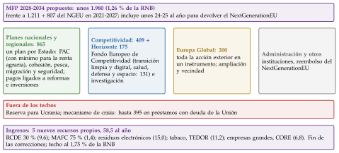
Fuente: elaboración propia a partir de la Comisión Europea y del Tribunal de Cuentas Europeo. Miles de millones de euros corrientes.
Recapitulación: el presupuesto actual sigue dominado por la PAC y la cohesión, con un 1 % de la RNB y financiado sobre todo con aportaciones según la renta; la revisión de 2024 y la propuesta para 2028-2034 lo mueven hacia la competitividad, la defensa y Ucrania. Lo que más ha cambiado, sin embargo, está fuera del presupuesto.
III. Actividad extrapresupuestaria
Terminamos con lo que queda fuera del presupuesto ordinario, que ha crecido tanto que hoy es casi tan grande como él.
Conclusión anticipada: la Unión no puede endeudarse para cubrir su presupuesto, pero sí tomar prestado para prestar o, con autorización expresa de la Decisión de recursos propios, para gastar. Lo ha hecho en cada crisis (balanza de pagos, euro, pandemia, guerra de Ucrania, defensa), con la garantía del margen de su presupuesto, y con el NextGenerationEU se ha convertido en uno de los grandes emisores de deuda en euros.
Hay 3 grupos: los instrumentos especiales, que superan los techos del marco; las operaciones de préstamo y endeudamiento; y el NextGenerationEU.
III.1. Instrumentos especiales y fondos fuera del presupuesto
Los instrumentos especiales están en el presupuesto, pero sus créditos pueden ir por encima de los techos del marco, para imprevistos:
el Instrumento de Flexibilidad, para gastos que no caben en ninguna rúbrica;
la Reserva para Solidaridad y Ayudas de Emergencia (RSAE), que junta el Fondo de Solidaridad (catástrofes naturales, como la dana de Valencia de 2024) y la ayuda de emergencia;
el Fondo Europeo de Adaptación a la Globalización, para los trabajadores despedidos en grandes reestructuraciones;
la Reserva de Adaptación al Brexit (5.000 millones de euros de 2018, ya ejecutada);
desde 2024, la Reserva para Ucrania y el instrumento EURI, que paga el exceso de intereses del NextGenerationEU sobre lo previsto (II.2.2).
Fuera del presupuesto quedan:
el Fondo Europeo de Apoyo a la Paz (FEAP, 2021): financia operaciones militares de la PESC y material para países socios, que el presupuesto no puede pagar (art. 41.2 TUE). Lo pagan los Estados según su RNB. Desde 2022, la mayor parte ha ido a Ucrania;
los fondos fiduciarios de la Unión para acción exterior;
y, hasta 2020, el Fondo Europeo de Desarrollo, que el marco 2021-2027 integró en el presupuesto [ver tema 3.B.42].
III.2. Operaciones de préstamo, endeudamiento y estabilización
III.2.1. ¿Puede endeudarse la Unión?
Para financiar el presupuesto, no: el art. 310 TFUE exige el equilibrio. Pero la Unión tiene personalidad jurídica y la Comisión puede tomar prestado en los mercados en su nombre, con 2 condiciones:
una base jurídica en los Tratados para la operación: el art. 122 (ayuda a un Estado en dificultades graves o medidas ante una situación económica grave), el 143 (balanza de pagos de los Estados fuera del euro), el 212 (ayuda macrofinanciera a terceros países) o el 352 (cláusula de flexibilidad);
una garantía: el presupuesto de la Unión, en concreto el margen entre el techo de recursos propios y el gasto. Si un deudor no paga, la Comisión puede pedir a los Estados recursos hasta ese techo.
Para prestar, sí, desde los 70: la deuda que toma se presta con las mismas condiciones (préstamos «espejo», back-to-back), y la operación no toca el saldo del presupuesto.
Para gastar, solo con autorización expresa: es la novedad del NextGenerationEU. La propia Decisión de recursos propios faculta a la Comisión, con carácter excepcional, temporal y limitado, a tomar prestado para financiar subvenciones (III.3).
Ya no se presta en operaciones aisladas: desde 2023 la Comisión se financia con un enfoque de financiación unificado: emite bonos de la UE en conjunto (sindicaciones, subastas, letras a corto plazo, bonos verdes) y reparte los fondos entre los programas.
III.2.2. Préstamos sectoriales y macroeconómicos
Sectoriales:
los préstamos de la CECA, para reconvertir el carbón y el acero, que se fueron amortizando tras expirar su Tratado en 2002;
los de Euratom (desde 1977), para centrales nucleares en la Unión y la seguridad o el desmantelamiento de instalaciones en países vecinos.
A Estados miembros (tabla 2):
el Mecanismo de Ayuda a la Balanza de Pagos (art. 143, desde 1988, con 50.000 millones de euros): Hungría, Letonia y Rumanía en 2008-2010;
el Mecanismo Europeo de Estabilización Financiera (MEEF, art. 122.2, 2010), hasta 60.000 millones de euros garantizados por el margen del presupuesto: Irlanda y Portugal, y un préstamo puente a Grecia en 2015;
el SURE (2020, art. 122): hasta 100.000 millones de euros en préstamos para los regímenes de reducción de jornada durante la pandemia (en España, los ERTE), con garantías de los Estados del 25 %; se prestaron 98.400 millones a 19 Estados, 21.300 de ellos a España [ver tema 3.B.45];
el SAFE (2025, art. 122): hasta 150.000 millones de euros en préstamos a largo plazo para compras conjuntas de defensa. Lo han pedido 19 Estados (Polonia, 43.700 millones; España, 1.000 millones), y el primer pago, a Polonia, llegó el 29 de mayo de 2026.
Fuera de la Unión, pero entre sus Estados: la Facilidad Europea de Estabilización Financiera (FEEF, 2010) y el Mecanismo Europeo de Estabilidad (MEDE, 2012), con una capacidad de préstamo de 500.000 millones de euros, son organismos intergubernamentales de los Estados del euro, que no usan el presupuesto ni la firma de la Unión. El MEDE prestó a España hasta 41.300 millones de euros en 2012-2013 para sanear su sector bancario [ver tema 3.B.45].
A terceros países:
la ayuda macrofinanciera (art. 212), préstamos con condiciones de política económica, complementarios a los del FMI, a países vecinos;
Ucrania, el mayor destino de los préstamos de la Unión desde 2022:
la ayuda macrofinanciera excepcional de 2022 (18.000 millones en 2023) y la parte de la Unión en los préstamos del G7 que se devuelven con los rendimientos de los activos rusos inmovilizados (18.100 millones, pagados en 2025);
los 33.000 millones de préstamos del Mecanismo para Ucrania (2024-2027), garantizados por el margen del presupuesto;
el Préstamo de Apoyo a Ucrania (Reglamento 2026/467): 90.000 millones para 2026-2027 (60.000 para defensa y 30.000 de apoyo presupuestario), acordado por el Consejo Europeo en diciembre de 2025 cuando no prosperó el «préstamo de reparaciones» con los activos rusos. La Unión se endeuda con la garantía del margen de su presupuesto, por cooperación reforzada sin Chequia, Hungría ni Eslovaquia; Ucrania solo lo devolverá si cobra reparaciones de guerra, y los intereses los paga el presupuesto.
| Instrumento | Base | Garantía | Importe y uso |
|---|---|---|---|
| Balanza de pagos (1988) | art. 143 TFUE | presupuesto de la UE | hasta 50.000 M€; Hungría, Letonia, Rumanía |
| MEEF (2010) | art. 122.2 | presupuesto de la UE | hasta 60.000 M€; Irlanda, Portugal, Grecia (2015) |
| FEEF (2010) y MEDE (2012) | tratado propio (intergubernamental) | capital de los Estados del euro | MEDE: 500.000 M€; Grecia, Irlanda, Portugal, Chipre, España |
| SURE (2020) | art. 122 | 25 % de garantías de los Estados | 98.400 M€ prestados a 19 Estados |
| NextGenerationEU (2020) | art. 122 y art. 5 de la Decisión 2020/2053 | margen de 0,6 puntos de RNB | 806.900 M€ (precios corrientes) previstos, para subvenciones y préstamos |
| Ucrania (2022-2027) | art. 212 | presupuesto de la UE | 18.000 (2023) + 18.100 (G7) + 33.000 (Mecanismo) + 90.000 (2026-2027) M€ |
| SAFE (2025) | art. 122 | presupuesto de la UE | hasta 150.000 M€ para defensa |
Fuente: elaboración propia a partir de la Comisión Europea y de los reglamentos de cada instrumento.
III.2.3. El Banco Europeo de Inversiones
El BEI (Tratado de Roma, 1958) es el banco de la Unión: sus accionistas son los 27 Estados y no depende del presupuesto. Se financia en los mercados con su propia calificación AAA y presta a largo plazo, a proyectos públicos y privados que sirvan a los objetivos de la Unión, en torno al 90 % dentro de ella; con el Fondo Europeo de Inversiones (FEI) forma el Grupo BEI [ver tema 3.B.30].
Su relación con el presupuesto es la garantía: el presupuesto respalda programas que gestiona el BEI con más riesgo del que admitiría su balance, como InvestEU (2021-2027, 26.200 millones de euros de garantía para movilizar más de 372.000 millones de inversión), sucesor del Plan Juncker (FEIE, 2015-2020).
En la pandemia, el Fondo de Garantía Paneuropeo del BEI (unos 25.000 millones de euros de garantías de los Estados) movilizó financiación para empresas, sobre todo pymes.
III.3. El Fondo de Recuperación NextGenerationEU
III.3.1. Idea y diseño
Por qué: la pandemia golpeó a todos, pero más a los Estados con menos margen fiscal. Si cada uno respondía con sus propios recursos, los más endeudados harían menos de lo necesario por miedo a los mercados, el impulso medio sería insuficiente y la recuperación, desigual, como en 2010-2013. Una respuesta común internalizaba ese efecto entre Estados, un bien público europeo de manual (I.4.2).
Qué es (Reglamento 2020/2094, sobre el art. 122 TFUE, y art. 5 de la Decisión de recursos propios), en 6 rasgos:
deuda emitida por la Unión, con su propia firma: hasta 750.000 millones de euros de 2018, unos 806.900 millones corrientes, en torno al 5 % del PIB de la Unión de 2020;
reembolsable hasta 2058: el principal de la parte de subvenciones se devuelve con el presupuesto entre 2028 y 2058, con un máximo anual del 7,5 % de esos 390.000 millones;
garantizada por el margen de 0,6 puntos de RNB sobre el techo de recursos propios: en último término, por los Estados;
en forma de subvenciones y préstamos: 390.000 millones de subvenciones y 360.000 de préstamos (de 2018); los préstamos los devuelve cada Estado que los pide;
para que gasten los Estados: el 90 % va al MRR y el resto refuerza programas del presupuesto (REACT-EU para la cohesión, 50.600 millones corrientes; Horizonte Europa, InvestEU, desarrollo rural, el Fondo de Transición Justa y rescEU);
con condicionalidad: los pagos dependen de cumplir reformas e inversiones pactadas.
Temporal: los nuevos compromisos acabaron en 2023 y la Comisión no puede tomar prestado en términos netos después de 2026.
Su base jurídica planteó dudas (equilibrio, recursos propios, no corresponsabilidad), que se resolvieron con salvaguardas (anexo D).
El NextGenerationEU en el presupuesto. Los fondos tomados en préstamo no son ingresos del presupuesto anual: entran como ingresos afectados externos (art. 21.5 del Reglamento financiero), una excepción al principio de no afectación, y financian gasto que queda fuera de los techos del marco. Por eso el presupuesto sigue equilibrado y, a la vez, la Unión gasta con deuda. Los intereses sí son gasto del presupuesto (rúbrica 2b), con el instrumento EURI para lo que exceda de lo previsto (II.2.2).
III.3.2. El Mecanismo de Recuperación y Resiliencia
Su tamaño: 723.800 millones de euros corrientes, 338.000 en subvenciones y 385.800 en préstamos (Reglamento 2021/241), más los fondos de REPowerEU (2023) para la energía. Al final, los Estados pidieron menos préstamos de los disponibles (291.000 millones en 2023) y 10 de ellos renunciaron después a 77.000; en agosto de 2026 el MRR era de 573.000 millones: 360.000 en subvenciones (338.000 del MRR original, 20.000 del RCDE y 2.000 de la Reserva del Brexit para REPowerEU) y 213.000 en préstamos. Con todo, el NextGenerationEU quedará en unos 634.000 millones de deuda, frente a los 806.900 posibles.
El reparto de las subvenciones: el 70 % según la población, la inversa del PIB per cápita y el paro de 2015-2019; el 30 % restante, sustituyendo el paro por la caída del PIB de 2020-2021.
Los planes nacionales de recuperación y resiliencia: cada Estado presentó un plan de reformas e inversiones, con al menos el 37 % para el clima y el 20 % para la transición digital, que atendiera las recomendaciones del Semestre Europeo [ver tema 3.B.45]. La Comisión lo evaluó con 11 criterios (A, B o C; ninguna C y más A que B) y el Consejo lo aprobó por mayoría cualificada.
Pago por resultados: los pagos no reembolsan costes, sino que llegan cuando se cumplen hitos (reformas) y objetivos (inversiones). Si un Estado cree que otro no los cumple, puede llevarlo al Consejo Europeo (el «freno de emergencia», hasta 3 meses).
El final: los hitos debían cumplirse antes del 31 de agosto de 2026, las últimas solicitudes de pago presentarse antes del 30 de septiembre y los pagos hacerse antes del 31 de diciembre de 2026, sin prórroga. A 1 de octubre de 2026 se habían pagado 450.000 millones, el 79 % del total (279.000 en subvenciones y 171.000 en préstamos), y se había cumplido el 68 % de los hitos y objetivos; solo el plan de Dinamarca estaba pagado del todo, y quedaban 32 solicitudes finales por 123.000 millones que se pagarán en diciembre.
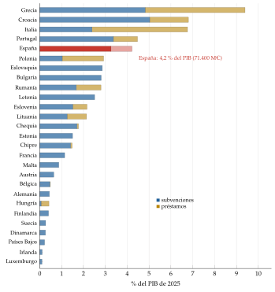
Fuente: elaboración propia a partir de Eurostat (fondos del MRR recibidos por las administraciones públicas, 2020-2025, incluida la prefinanciación, y PIB de 2025). Faltan los pagos de 2026.
III.3.3. La financiación: la Comisión en los mercados
La Comisión ha pasado a ser uno de los mayores emisores de deuda en euros, con bonos a plazos de hasta 30 años, letras a corto plazo y bonos verdes para el gasto verde de los planes:
la deuda total de la Unión era de 836.800 millones de euros a 30 de junio de 2026 (793.600 en bonos, 84.300 de ellos verdes, y 43.200 en letras) y unos 875.000 millones en noviembre, de los que el NextGenerationEU es la mayor parte;
en 2026 emitirá 180.000 millones, su mayor plan anual;
el coste de financiación del NextGenerationEU fue del 3,32 % en el primer semestre de 2026, y el bono a 10 años osciló entre el 2,96 % y el 3,63 %;
tiene la máxima calificación en Fitch, Moody’s, Scope, DBRS y KBRA, y AA+ en S&P.
El préstamo a Ucrania y el SAFE se financian igual: la Unión se acerca al billón de euros de deuda, y el Tribunal de Cuentas cifra la exposición del presupuesto a sus garantías en 406.800 millones a finales de 2025.
III.3.4. España y el MRR
El plan: el Plan de Recuperación, Transformación y Resiliencia (2021) pedía 69.500 millones de subvenciones; la adenda de 2023 lo amplió a 163.000 millones, con unos 80.000 de subvenciones (incluido REPowerEU) y 83.200 de préstamos.
El recorte de los préstamos: en diciembre de 2025 el Gobierno aprobó una adenda de simplificación que mantuvo todas las subvenciones y redujo los préstamos a unos 22.800 millones; la Comisión cifra el plan final en 102.000 millones (79.000 de subvenciones y 21.400 de préstamos).
Lo recibido: España ha cobrado 6 pagos y unos 77.600 millones de euros (el 77 % del plan; el sexto, 6.234 millones, en agosto de 2026). El 30 de septiembre de 2026 pidió el séptimo y último, de 25.861 millones (21.463 de subvenciones y 4.398 de préstamos), con 148 hitos.
Su peso: es, con Italia, el mayor receptor de subvenciones en euros, y lo recibido hasta 2025 es el 4,2 % de su PIB (gráfico 5). Su efecto en el crecimiento y su ejecución se analizan con la economía española [ver tema 4.A.29] [ver tema 4.A.30].
Fuera del MRR, España recibió 21.324 millones del SURE y fondos de REACT-EU para la cohesión.
III.3.5. ¿Es sostenible la deuda común?
El NextGenerationEU dejó a la Unión una deuda que hay que devolver con el presupuesto entre 2028 y 2058. ¿Es una carga que el presupuesto puede soportar, o una hipoteca para los marcos futuros? Para responder basta aplicar el modelo de sostenibilidad de la deuda pública, que arranca con Domar (1944) y se desarrolla con la dinámica de la deuda [ver tema 3.A.39].
La idea del modelo: lo que importa no es la deuda en euros, sino en relación con la renta que la respalda. La ratio de deuda sube con el diferencial entre el tipo de interés y el crecimiento nominal, el efecto «bola de nieve», y baja con los superávits primarios. Si el tipo de interés es menor que el crecimiento, el crecimiento diluye la deuda por sí solo; si es mayor, hace falta superávit para que no crezca.
Cómo se aplica a la Unión: su caso es más sencillo que el de un Estado, por 2 razones:
la deuda tiene un calendario cerrado: solo cuenta la que financió subvenciones, porque la de los préstamos la devuelven los Estados que los recibieron, y se amortiza a lo largo de 31 años, hasta 2058, sin refinanciarse;
el «superávit primario» que la paga es la parte del presupuesto que se reserva cada año para intereses y amortizaciones, con cargo a los recursos propios.
La pregunta pasa a ser qué parte de la renta de la Unión se lleva cada año esa carga.
Las cifras (gráfico 6): con la deuda de las subvenciones, unos 421.000 millones de euros, amortizada en cuotas iguales, la RNB de la Unión de 2025 (unos 17,6 billones) creciendo al 3,5 % nominal y un tipo de interés del 3,3 % (el coste de financiación de 2026):
la deuda es el 2,1 % de la RNB en 2028 y baja a 0 en 2058;
la carga anual es de unos 27.500 millones en 2028 (13.600 de amortización y 13.900 de intereses), el 0,14 % de la RNB, y baja hasta el 0,03 % en 2058;
en total, unos 643.000 millones: 421.000 de principal y 222.000 de intereses.
La Comisión estima en el 0,11 % de la RNB el reembolso previsto en el marco 2028-2034, del mismo orden.
El cálculo. Con la deuda inicial \(D_0\) en relación con la RNB, \(d_0=D_0/Y_0\), amortizada en cuotas iguales durante \(T\) años, un tipo de interés \(i\) y un crecimiento nominal \(\gamma\) constantes, la carga anual (amortización más intereses sobre la deuda viva) en relación con la renta es \[c_t=\frac{d_0}{(1+\gamma)^t}\left[\frac1T+i\left(1-\frac{t-1}{T}\right)\right],\] con \(d_0\approx2{,}4~\%\) de la RNB de 2025, \(T=31\), \(i=3{,}3~\%\) y \(\gamma=3{,}5~\%\). Es una simulación, no un calendario oficial: la Unión no ha publicado uno.
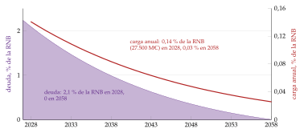
Fuente: elaboración propia con los supuestos del texto, a partir del Tribunal de Cuentas Europeo y de la Comisión Europea. Es una simulación, no un calendario oficial (no lo hay).
Lo que se concluye:
la deuda es sostenible: con un tipo de interés que no supera al crecimiento, la deuda en relación con la renta baja sola, y la carga anual es pequeña y decreciente;
pero no es gratis para el presupuesto: la carga compite con los demás gastos dentro del techo, y hay 3 formas de pagarla:
más ingresos: los nuevos recursos propios, que eran el compromiso de 2020;
menos gasto: recortar otros programas;
refinanciar: emitir deuda nueva para devolver la vieja, lo que la Decisión de recursos propios no permite más allá de 2058 y convertiría la deuda en permanente;
los intereses ya pesan: la subida de tipos de 2022-2023 hizo que superaran lo previsto, y el sobrecoste de 2026 (4.225 millones) hubo que cubrirlo con el EURI (II.2.2). La Unión se financia al 3,3 %, algo por encima de Alemania pese a su calificación máxima, porque su mercado es aún menos líquido que el de los grandes emisores soberanos.
El precedente histórico: el «momento hamiltoniano». En 1790, Alexander Hamilton, secretario del Tesoro de Estados Unidos, hizo que la federación asumiera las deudas de guerra de los Estados y las pagara con impuestos federales (aranceles), y muchos vieron en el NextGenerationEU su equivalente europeo. La lección de Sargent (2012)4 es que la asunción funcionó porque la deuda común vino con impuestos federales para pagarla; y cuando, en los años 40 del siglo XIX, varios Estados dejaron de pagar, la federación no los rescató, lo que fijó la disciplina de los Estados. La Unión tiene la deuda común, pero no los impuestos, y su regla de no rescate es el art. 125 TFUE.
Más allá de la deuda: con cerca de 875.000 millones de euros en circulación, los bonos de la Unión son ya un mercado profundo, y un activo seguro común reduciría el vínculo entre bancos y Estados [ver tema 3.B.44]. Sobre los efectos del gasto, la Comisión estima que las inversiones del MRR tendrán un impacto de 891.700 millones de euros hasta 2030, y la evaluación final llegará en 2028; como referencia, la literatura sobre los fondos regionales encuentra que las regiones del antiguo «objetivo 1» crecieron en torno a 1,6 puntos más al año [ver tema 3.B.40].
En suma, la deuda común es sostenible y barata; el problema es político: quién la paga y si se repite. El NextGenerationEU demostró que la Unión puede estabilizar en una crisis común, pero no creó una capacidad fiscal permanente: acaba en 2026, y repetirlo exigiría otra vez la unanimidad. La propuesta para 2028-2034 abre esa puerta con un mecanismo de crisis de préstamos, no de subvenciones.
Recapitulación: la actividad extrapresupuestaria ha pasado de préstamos puntuales a un endeudamiento común de cerca de 1 billón de euros, apoyado en el margen del presupuesto. El NextGenerationEU acaba en 2026, pero su deuda, y el precedente, quedan.
Conclusión
Recapitulación: En conclusión,
Las finanzas de la Unión descansan en una constitución financiera rígida: los Estados deciden por unanimidad cuánto puede ingresar y cuánto puede gastar en 7 años, y el presupuesto anual no puede tener déficit.
Ese presupuesto es pequeño, en torno al 1 % de la RNB, se financia sobre todo con aportaciones según la renta y gasta casi 2/3 en la PAC y la cohesión, porque la unanimidad y el justo retorno favorecen el gasto que vuelve a cada Estado frente a los bienes públicos europeos.
Fuera del presupuesto, la Unión se ha convertido en un gran prestamista y emisor de deuda: el NextGenerationEU, los préstamos a Ucrania y el SAFE se apoyan en el margen de su techo de recursos propios.
Relevancia:
Para España, el NextGenerationEU ha sido la mayor transferencia de su historia en la Unión, y su saldo presupuestario ordinario se acerca ya al equilibrio: el marco de 2028-2034 decidirá si sigue siendo receptor neto [ver tema 4.A.30].
Extensiones y relación con otras partes del temario:
Las políticas que financia el presupuesto: la PAC [ver tema 3.B.38], la cohesión [ver tema 3.B.40] y la acción exterior [ver tema 3.B.42]; la respuesta fiscal común y el MEDE [ver tema 3.B.45]; la teoría del federalismo fiscal [ver tema 4.B.14] y los principios presupuestarios en España [ver tema 4.B.21].
Opinión:
El presupuesto de la Unión hace bien lo que hace, pero poco de lo que debería: los bienes públicos europeos (competitividad, defensa, clima) no caben en un 1 % de la RNB que se reparte por saldos netos.
La propuesta para 2028-2034 va en la buena dirección (un fondo de competitividad, recursos propios genuinos, un mecanismo de crisis), si la negociación no la convierte otra vez en un reparto de sobres.
Es el método que propuso Robert Schuman en su declaración de 1950: «Europa no se hará de una vez ni en una obra de conjunto: se hará gracias a realizaciones concretas, que creen en primer lugar una solidaridad de hecho»5. El NextGenerationEU fue una de ellas; un presupuesto para los bienes públicos europeos sería la siguiente.
Idea final:
Volvamos al refrán: cuentas claras, amistades largas. Las cuentas de la Unión son muy claras, pero miden lo que menos importa: cuánto vuelve a cada socio. La amistad será larga si los 27 aprenden a mirar otra cuenta, la de lo que solo pueden conseguir juntos.
A. Anexo: el modelo de los bienes públicos europeos
a) Idea
Formaliza el argumento del apartado I.4.2: si los beneficios de un bien cruzan las fronteras, cada Estado que lo paga por su cuenta ofrece menos de lo eficiente, y la provisión común lo corrige. Es la condición de Samuelson (1954) y Bowen (1943) aplicada a los Estados de la Unión, y completa el teorema de la descentralización de Oates (1972), que mira el coste de centralizar.
b) Modelo
i) Supuestos
\(N\) Estados iguales y un bien público europeo \(G\): la investigación básica, la vigilancia de las fronteras exteriores, la defensa o una red de transporte. Cada unidad que se ofrece beneficia a todos los Estados (no rival y no excluible entre ellos).
El beneficio marginal del bien para cada Estado, en euros, es \(\mathit{BMg}_i(G)=\beta\,(a-G)\), decreciente.
El coste marginal es constante, \(c\).
2 regímenes:
nacional: cada Estado decide cuánto aporta mirando solo su beneficio (equilibrio de Nash);6
europeo: el presupuesto de la Unión elige \(G\) para maximizar el bienestar del conjunto y lo financia con aportaciones de todos.
ii) Desarrollo
Paso 1: la provisión nacional.
Cada Estado aporta hasta que su propio beneficio marginal iguala el coste: \(\beta\,(a-G^{\mathrm N})=c\), es decir, \(G^{\mathrm N}=a-c/\beta\).
No cuenta lo que su aportación da a los demás: hay polizones (free riders) [ver tema 3.A.23].
Paso 2: la provisión europea. La Unión suma los beneficios de todos (la suma vertical de Bowen y Samuelson, 1954):
\[\sum_{i=1}^{N}\mathit{BMg}_i(G^{*})=c\quad\Longrightarrow\quad G^{*}=a-\frac{c}{N\beta}>G^{\mathrm N}\tag{1}\]
Paso 3: el valor añadido europeo.
La brecha \(G^{*}-G^{\mathrm N}=\frac{c}{\beta}\left(1-\frac1N\right)\) crece con el número de Estados: cuanto más se reparte el beneficio, menos ofrece cada uno por su cuenta.
En el gráfico 7 se ve con 3 Estados: con \(a=8\), \(\beta=0{,}5\) y \(c=2\), cada Estado solo ofrece \(G^{\mathrm N}=4\); la Unión, \(G^{*}=6{,}7\). El triángulo es el bienestar que se pierde.
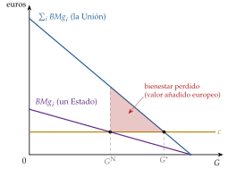
iii) Implicaciones
El presupuesto europeo debe concentrarse en bienes con grandes efectos entre Estados: investigación e innovación, redes transeuropeas, protección de las fronteras exteriores, defensa, acción exterior, lucha contra el cambio climático. Ahí cada euro gastado en común rinde más que en los presupuestos nacionales.
No debe hacer lo que los Estados hacen bien solos: si las preferencias difieren y los efectos se quedan dentro, mejor el nivel nacional (Oates).
La redistribución entre Estados tiene otra justificación: la cohesión de un mercado único y de una moneda común [ver tema 3.B.40].
La estabilización apenas está: con un presupuesto del 1 % de la RNB y sin déficit, la Unión no puede amortiguar los ciclos. El NextGenerationEU fue la primera excepción (III.3).
c) Extensiones
Economías de escala: si producir el bien en común ahorra costes (no duplicar 27 sistemas de armas o 27 agencias), la ventaja de la Unión es mayor.
Heterogeneidad: si los Estados valoran el bien de forma muy distinta, el coste de la uniformidad puede superar al beneficio. La regla de asignación del modelo de Oates (centralizar si la externalidad supera la mitad de la diferencia de preferencias) recoge los 2 efectos.
Clubes: si el bien es excluible entre Estados (un proyecto de defensa conjunto, una red de alta velocidad), se puede financiar solo entre los que lo quieren, con cooperación reforzada o fuera del presupuesto.
d) Evidencia empírica
Alesina, Angeloni y Schuknecht (2005) encontraron que el gasto y la regulación de la Unión crecieron también donde la teoría no lo justifica (la agricultura, buena parte del gasto regional) y poco donde sí (defensa, política exterior).
El presupuesto lo confirma: la PAC y la cohesión todavía se llevan casi 2/3 del marco 2021-2027 (II.2.1), y la investigación, en torno al 8 %.
El informe Draghi (2024) calcula que la Unión necesita entre 750.000 y 800.000 millones de euros más de inversión al año (4,4-4,7 % de su PIB) para recuperar la competitividad, en buena parte en bienes públicos europeos: innovación, energía, descarbonización y defensa.
e) Valoración
El modelo da un criterio claro y medible de lo que debería financiar la Unión, y explica por qué el debate actual habla de «bienes públicos europeos» y del Fondo Europeo de Competitividad propuesto para 2028-2034 (II.3).
Pero supone que la Unión decide como un planificador benevolente. En la realidad, el presupuesto lo deciden 27 gobiernos por unanimidad, y cada uno mira cuánto recibe a cambio de lo que paga. Cómo sesga eso el presupuesto lo recoge el modelo del justo retorno (anexo C).
B. Anexo: las balanzas presupuestarias con los Estados
Para qué sirven: la Comisión publica cada año el gasto y las aportaciones de cada Estado. De ahí sale el saldo operativo con el que cada gobierno mide si es contribuyente o receptor neto, y que alimenta la lógica del justo retorno (II.2.5).
Cómo se calcula (la metodología tradicional de la Comisión):
Gasto: solo el gasto operativo asignado a cada Estado, según dónde reside quien cobra. Se excluyen la administración, la acción exterior y lo que no se puede asignar a un Estado. El NextGenerationEU, que se financia con deuda, se suele dar aparte.
Ingresos: solo las contribuciones nacionales (IVA, RNB y plástico, con las correcciones). Los recursos tradicionales se excluyen, porque los aranceles los paga quien importa, que no tiene por qué residir en el país que los recauda (el «efecto Rotterdam»).
Ajuste: las contribuciones se multiplican por el cociente entre el gasto operativo total y las contribuciones totales, para que los saldos sumen cero.
Saldo: gasto operativo asignado menos contribución ajustada.
Sus límites:
no recogen los beneficios del mercado único ni los de los bienes públicos;
asignan el gasto a quien cobra, aunque el beneficio llegue a empresas de otros Estados (las obras de la cohesión las hacen a menudo constructoras de los contribuyentes netos);
varían mucho de un año a otro según el ritmo de pagos de la cohesión, que se concentra al final de cada periodo.
La evolución:
antes de 2004, con 15 Estados, solo eran receptores netos España, Portugal, Grecia e Irlanda, y España recibía cerca del 44 % de todos los saldos positivos; con las ampliaciones al Este, los nuevos Estados (Polonia, Hungría, Rumanía, Chequia) pasaron a ser los mayores receptores;
los contribuyentes netos son siempre los mismos (Alemania, Francia, Italia, los Países Bajos, los nórdicos y Austria, y el Reino Unido hasta 2020), con Alemania como primero en euros;
España pasó de recibir más del 1 % de su PIB a mediados de los 90 a oscilar en torno al equilibrio desde 2014; en 2021-2023, con el MRR, volvió a ser receptora neta destacada (1,6 % del PIB en 2021, según Hacienda).
C. Anexo: el modelo del justo retorno
a) Idea
Formaliza el argumento del apartado II.2.5: si los gobiernos valoran su saldo neto contable más que los beneficios difusos de los bienes públicos europeos, la negociación por unanimidad sesga el presupuesto hacia el gasto asignable y lo cierra con correcciones y sobres para los contribuyentes netos.
b) Modelo
i) Supuestos
\(N\) Estados. El Estado \(i\) paga la fracción \(s_i\) del presupuesto (su peso en la RNB), con \(\sum_i s_i=1\).
El presupuesto tiene 2 tipos de gasto:
gasto asignable \(R=\sum_i r_i\), que llega a un Estado concreto y se ve en sus cuentas (las ayudas de la PAC, los fondos de cohesión);
gasto en bienes públicos europeos \(P\) (investigación, fronteras, defensa), que no se asigna a nadie.
Cada euro de \(P\) da a la Unión \(m>1\) euros de beneficio (el valor añadido europeo del anexo A), repartido entre los Estados según su tamaño, \(s_i\).
Los gobiernos valoran el saldo contable con peso 1, pero los beneficios difusos de \(P\) con peso \(\lambda<1\): no salen en las estadísticas, llegan tarde y nadie se los atribuye al gobierno que los negoció.
El marco se aprueba por unanimidad: cada Estado acepta si gana respecto a la alternativa, que es prorrogar el marco anterior (art. 312.4 TFUE).
ii) Desarrollo
Paso 1: el saldo neto contable.
El saldo del Estado \(i\) es \(SN_i=r_i-s_i\,(R+P)\).
Sumado entre todos, \(\sum_iSN_i=-P\): el gasto asignable es un juego de suma cero entre Estados (lo que uno recibe de más lo pagan los demás), y el bien público, de suma negativa en las cuentas.
Paso 2: lo que percibe cada gobierno.
Suma al saldo los beneficios del bien público, con su peso: \(U_i=SN_i+\lambda\,m\,s_i\,P\).
Agrupando:
\[U_i=\underbrace{r_i-s_i\,R}_{\text{reparto del gasto asignable}}+\;s_i\,(\lambda m-1)\,P\tag{2}\]
Paso 3: lo que conviene al conjunto.
Con \(\lambda=1\), el bienestar de la Unión es \(\sum_iU_i=(m-1)\,P\): el gasto asignable no crea nada (solo reparte) y el bien público crea \(m-1\) euros netos por euro.
El óptimo es dedicar a bienes públicos todo lo que tenga \(m>1\).
Paso 4: lo que se negocia.
Si \(\lambda m<1\), cada gobierno percibe el bien público como una pérdida: \(\partial U_i/\partial P=s_i\,(\lambda m-1)<0\). Nadie lo defiende con fuerza en la mesa.
El gasto asignable, en cambio, lo defiende quien lo recibe: los receptores netos (\(r_i>s_iR\)) lo quieren mayor, y los contribuyentes netos (\(r_i<s_iR\)) solo aceptan si se les compensa.
Con unanimidad, cada contribuyente neto exige \(U_i\geq U_i^{\text{prórroga}}\), y la compensación más barata es una corrección de su aportación o un sobre de gasto preasignado para él (gráfico 8).
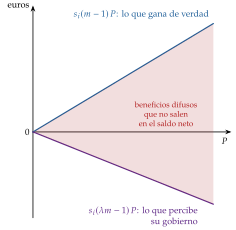
Fuente: elaboración propia a partir del modelo del texto. La ganancia real del Estado \(i\) crece con el gasto en bienes públicos \(P\) (pendiente \(s_i(m-1)>0\)); la que percibe un gobierno que da peso \(\lambda<1/m\) a los beneficios difusos cae (pendiente \(s_i(\lambda m-1)<0\)).
iii) Implicaciones
Composición sesgada: el presupuesto gasta demasiado en lo asignable y poco en bienes públicos europeos, aunque estos rindan más.
Correcciones: cada marco se cierra con rebajas para los contribuyentes netos (el cheque británico desde 1984; las correcciones a tanto alzado de 2021-2027).
Sobres y preasignaciones: dotaciones mínimas por Estado y regiones con «regalos» de última hora en las cumbres; el gasto se diseña para que «vuelva».
Inercia: como la alternativa es prorrogar el marco anterior, quien gana con el reparto vigente puede vetar cambios; por eso la PAC y la cohesión bajan muy despacio.
Por qué importan los recursos propios genuinos: si la Unión se financiara con impuestos ligados a políticas comunes (el carbono, el plástico), las aportaciones nacionales \(s_i\) serían menos visibles, y el saldo neto, menos relevante.
c) Extensiones
La solución de negociación de Nash: el reparto que maximiza el producto de las ganancias de cada Estado respecto a la prórroga da más a quien tiene una alternativa mejor; con unanimidad, cualquier Estado puede pedir mucho a cambio de su voto [ver tema 3.A.14].
El poder de voto: Kauppi y Widgrén (2004) encontraron que, en el último cuarto del siglo XX, el reparto del gasto entre Estados se explica mejor por su poder en el Consejo (índice de Banzhaf) que por sus necesidades (renta, peso agrario) [ver tema 3.B.36].
Paquetes: la unanimidad empuja a negociar todo junto (marco, recursos propios, ampliaciones, NextGenerationEU), lo que facilita los intercambios, pero también sube el precio de cada veto.
d) Evidencia empírica
Las correcciones han existido casi siempre desde 1984 y se han extendido de un país a 5.
El gráfico 4 muestra que los saldos netos son pequeños respecto a la renta: los mayores contribuyentes aportan en neto en torno al 0,3 % de su RNB, frente a beneficios del mercado único muy superiores.
Las negociaciones de 2013 y de 2020 se cerraron con dotaciones especiales para regiones y países concretos; en 2020, los «frugales» lograron subir sus correcciones a cambio de aceptar las subvenciones del NextGenerationEU.
e) Valoración
El modelo explica bien la composición y la inercia del presupuesto y por qué cada negociación termina en un reparto de sobres.
Su mensaje normativo es que los saldos netos son una mala medida: no recogen los beneficios del mercado único, ni que buena parte del gasto en un Estado acaba en empresas de otros (los contratos de la cohesión), ni los bienes públicos.
Las salidas son 3: subir el peso de los bienes públicos (el Fondo Europeo de Competitividad), recursos propios genuinos y, para las crisis, endeudamiento común. Las 3 están en la propuesta para 2028-2034.
D. Anexo: la base jurídica del NextGenerationEU
Al proponer el NextGenerationEU se plantearon 3 dudas jurídicas, que el Servicio Jurídico del Consejo resolvió en su dictamen de junio de 2020:
¿Respeta el equilibrio presupuestario (art. 310 TFUE) y el sistema de recursos propios (art. 311)? Sí, con 2 salvaguardas:
lo prestado entra como ingresos afectados externos: no se mezcla con los ingresos y gastos del presupuesto anual, que sigue equilibrado;
la devolución está garantizada dentro del techo de recursos propios, por un aumento temporal y exclusivo (0,6 puntos de RNB), y los Estados se comprometen a poner los recursos necesarios.
¿Es correcta la base jurídica (art. 122 TFUE)? Sí, por el carácter excepcional y temporal de las medidas ante una crisis que los Estados no podían controlar.
¿Respeta la cláusula de no corresponsabilidad (art. 125 TFUE)? Sí: la Unión no asume deudas de los Estados, sino que se endeuda ella para un proyecto común, y el art. 125 admite las garantías mutuas para proyectos específicos.
El Tribunal Constitucional alemán rechazó en diciembre de 2022 el recurso contra la ley alemana de ratificación de la Decisión de recursos propios: aceptó el endeudamiento por ser excepcional, temporal y limitado, pero advirtió de que no podía convertirse en una vía de financiación permanente.
E. Anexo: el reparto de competencias de la Unión
La regla de partida es la atribución: la Unión solo tiene las competencias que le dan los Tratados, y las demás siguen siendo de los Estados (arts. 4.1 y 5 TUE). El art. 2 TFUE las ordena en categorías según quién legisla, y los arts. 3 a 6 enumeran los ámbitos de cada una (figura 6). Las ejerce con proporcionalidad (no más de lo necesario) y, fuera de las exclusivas, con subsidiariedad (solo si el objetivo se alcanza mejor en común).
Exclusivas y compartidas: en las exclusivas (art. 3) solo legisla la Unión; los Estados, solo si ella los faculta o para aplicar sus actos. En las compartidas (art. 4), la categoría residual, legislan las 2, pero lo que regula un acto de la Unión deja de estar disponible para los Estados: es la preferencia u ocupación del campo (art. 2.2 y Protocolo n.º 25), que solo alcanza a lo que el acto regula. En investigación, espacio, cooperación para el desarrollo y ayuda humanitaria son paralelas: la acción de la Unión no impide la de los Estados (art. 4.3 y 4.4).
Coordinación y apoyo: en las políticas económicas y de empleo (art. 5) la política sigue siendo de los Estados y la Unión la coordina con orientaciones del Consejo; en los ámbitos del art. 6 (salud, industria, cultura, turismo, educación, protección civil, cooperación administrativa) la Unión solo apoya, coordina o complementa, sin armonizar las leyes nacionales. La PESC tiene un régimen propio, intergubernamental, con unanimidad y sin actos legislativos (art. 24 TUE).
Dónde está este tema: el presupuesto no es un ámbito de los arts. 3 a 6, sino el instrumento que financia la acción de la Unión en todas las categorías (arts. 310 a 325 TFUE). La figura resalta los 2 ámbitos que más gastan, la cohesión y la agricultura, ambos compartidos, que se llevan casi 2/3 del marco 2021-2027 (II.2.1).
Qué se deduce: las competencias exclusivas apenas cuestan dinero (son sobre todo normas), pero dan ingresos: los derechos de aduana, el recurso propio tradicional, nacen de la unión aduanera. En las de apoyo, la Unión actúa con programas de gasto (Erasmus+, EU4Health), porque no puede armonizar.
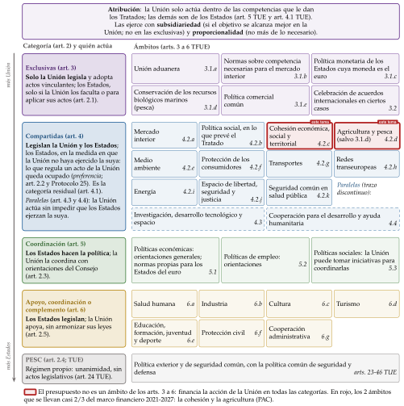
Fuente: elaboración propia a partir de los arts. 2 a 6 del TFUE y de los arts. 4, 5 y 24 del TUE.
F. Anexo: preguntas de test
Preguntas tipo test del primer ejercicio: simulador de test.
Bibliografía
Fuentes esenciales
Otras referencias
Desde el Tratado de Lisboa (2009) se habla de presupuesto «de la Unión»: la Comunidad Europea desapareció y la Unión tiene personalidad jurídica. «Presupuesto comunitario», como dice el título, es el nombre tradicional.↩︎
En el Consejo Europeo de Dublín de 1979, Margaret Thatcher lo resumió así: «No pedimos ni un penique del dinero de la Comunidad para Gran Bretaña. Lo que pedimos es que nos devuelvan una cantidad muy grande de nuestro propio dinero».↩︎
Paul Samuelson recibió el Premio Nobel en 1970 «por el trabajo científico con el que ha desarrollado la teoría económica estática y dinámica y ha contribuido activamente a elevar el nivel de análisis de la ciencia económica».↩︎
Thomas Sargent recibió el Premio Nobel en 2011, con Christopher Sims, «por su investigación empírica sobre causa y efecto en la macroeconomía».↩︎
En el original, Schuman (1950): «L’Europe ne se fera pas d’un coup, ni dans une construction d’ensemble : elle se fera par des réalisations concrètes créant d’abord une solidarité de fait».↩︎
John Nash recibió el Premio Nobel en 1994, con John Harsanyi y Reinhard Selten, «por su análisis pionero de los equilibrios en la teoría de los juegos no cooperativos».↩︎